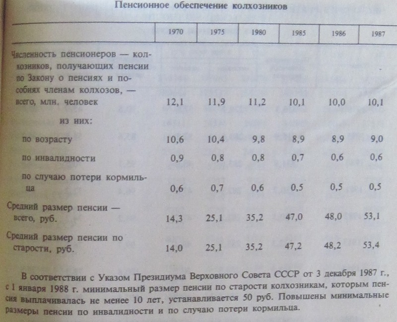
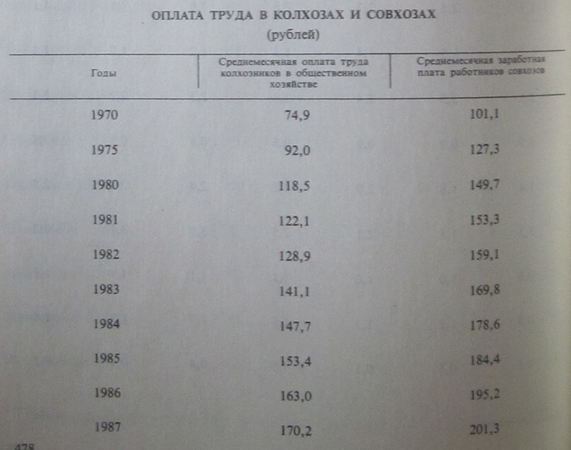
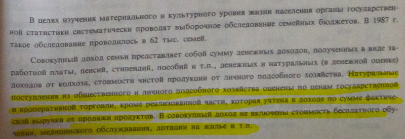

Неструктурированные заметки по теме -- 4
http://politclub.livejournal.com/4676277.html
Газета "Правда" не врала? Запад действительно гнил?
Такие вопросы у меня появляются, когда я вижу, что улицы столицы Эстонии, второго и третьего по величине городов, заполнены нищими, очень бедно одетыми, попрошайками, какими то серыми личностями, то ли бабками, то ли мужиками, которые повсюду роются в мусоре, тащат какие то духовитые пакеты больше себя ростом...
Не говорю уже о провинции, которая, фактически, умерла... Улицы маленьких городков с населением 3 - 9 000 человек, которые составляют 95% от всех городов Эстонии, пусты, лишь ветер носит пыль, листья и обрывки какого то целофана и обрывков оберточной бумаги. Целыми часами, гуляя даже по центру этих городков, вы не встретите ни одной живой души, ни одна машина не проедет мимо, практически, для вас бесплатная атмосфера и сцена из фильма Обитель Зла. Жизнь можно найти только возле единственного в поселении супермаркета Максима или услышать тихое шуршание земледельческих работ, на заднем дворе одного из десятка домов сиротливых улиц. А ведь эстонцы выбрали, 20 лет назад, путь предательства своих неоднократных спасителей и переметнулись на сторону геополитического противника, став глубоко провинциальным членом ЕС и, тем более бесполезным грузом, в НАТО.
Нищета накрыла эту бывшую республику СССР, которую еще в 1991 году ЦРУ оценивала по уровню жизни на уровне Дании, что очень неплохо. Изобилие для Эстонии, Советы создали за счет разграбления и обирания русских регионов СССР. За счет РСФСР национальные окраины, не только Эстония, но и Латвия, Литва, Грузия, Армения, Молдавия - создали на своей территории практически суперсоциализм, который почти коммунизм. А РСФСР загнивала, отдавая по 200 рублей с каждого человека в пользу вышеперечисленных республик, лишенная всего, с пустыми прилавками и меньшими зарплатами за более тяжелый труд. Несмотря на проплаченные рейтинги, сегодняшний уровень благополучия большинства жителей Эстонии я сравнил бы, с Грузией, может быть, но с отвратительным климатом, с длинной и холодной зимой, когда счета за отопление почти превышают зарплату, чего в Грузии нет. Или сравнил бы с Гондурасом. Потому что, уже по названию этой страны видно, что там не все в порядке, как и в Эстонии. Ну может еще Таджикистан ровня.
А РФ, Украина, Белоруссия, Казахстан давно уже переплюнули Эстонию по реальному благополучию жизни простого своего жителя, гражданина. Везде какая то стабильность, рост уровня жизни, индексация пенсий... А в Эстонии же - сокращение соцпособий, каждый четвертый - безработный, каждый пятый голодает и не имеет дохода вообще более года. Людям не на что есть, а не то что задуматься о переезде в РФ, к тому же за свои деньги, которые потом, через полгода, возможно, компенсируют. После того что сделало с этмими людьми Эстония, веры уже нет ни одному правительству или государству. Для жителя Эстонии, 100 евро огромная, нереальная ценность. 80% населения, таких денег в руках единоразово не держало...
А живут здесь теперь так:
Мать: Я сама работаю, а получаю минимум (мин - 280 евро брутто). Квартира очень дорогая, еле еле прожили зиму и скоро опять зима. Мне очень стыдно уже, что я работаю, а жить уже не умею. Сегодня моим детям говорила чтобы экономили и не ели много булки потому, что уже кушать нечего и надо на пару дней ещё растянуть. Сама даже не знаю, зачем сказала... А вижу, что приходиться говорить, потому что нечего кушать уже. Мне стыдно, я живу в европейском государстве а не в африке. Мне стыдно, что я работаю и не могу трусы купить детям, только по две пары у них, да и то уже с дырочками. Боюсь уже школа начинается скоро. Придёться идти в социальный отдел и протягивать руку для помощи, может быть помогут? Мне уже 41 год и никогда так я не жила, как сейчас живём, одним днём, а завтра как бог на душу положит...
Пенсионер: Да, скоро зима, опять в долгах увязну, только сейчас почти рассчитался с долгами за эту зиму, за пар - 400 евро должен был, пришло предупреждение: если не выплачу - то к отопительному сезону пар всему дому не включат, вообще беспредел, а где я деньги возьму пенсия 220евро за пар больше 100 евро приходят счета вся пенсия на коммунальные уходит ? Такого беспредела в ссср не было, а сейчас что твориться! Такая маленькая страна и такая нищая стала, а что дальше?
Подруга: Осталась мама с тремя детками школьного возраста одна, отца нет, маме работу не найти т.к. не берут никуда уже за 40 лет. А деток одевать нужно, растут же, кормить 3 раза в день, а ещё за квартиру заплатить, а то выгнать могут, а коммунальные платежи о-го-го! Не 10 евро. В Нарве есть полулегальный заработок, ну и сходишь в Ивангород, принесёшь эти 2 пачки (сигарет), так на эти 2 пачки нужно ещё деньги, а потом эти 2 пачки продать, а кому?.... плюс нужно паспорт менять, а это ещё около 30 евро(российский паспорт). ...А когда на тебя смотрят детские голодные глаза и спрашивают:" Мама, а что у нас сегодня покушать?" а дома ничего нет, и ты в данный момент ничего не можешь сделать...
Тоже мать: Зато , су.и, (простите за выражение)чиновники и правительство набили себе кошельки и сидят, рожи - смотреть противно....одна больше другой!!!! А детям дотация по 19 евро (в месяц)!!! Их бы уродов посадить на эти копейки! Может тогда бы в их мозгах, что то образумилось!!! Бог им судья....на том свете всем воздастся по заслугам!!!
Просто работяга: Да! Страна уходит не понятно куда, цены растут на все, а зарплату отказываються поднимать.. Хотел бы я взглянуть тому приезжему козлу в глаза, который в прошлом году заявил что в ЭР с экономикой все в порядке... Самое противное, что правительство на каждом углу орет, что у нас все хорошо мы почти что в пятерке, а то что безработных дохера и социалку при этом порезали где только возможно так это нормально. Половина страны работает нелегально или вышвырнута с пособия по безработице, какая тут может быть правдивая статистика?
Безработный: Это при окупантах бутылка стоила 20 копеек. Одна бутылка - кило хлеба, 10 бутылок - кило колбасы. А сейчас - 6 центов (или уже 8-мь), тоесть на хлеб 25 бутылок, и 80-т на колбасу. Иди пособирай, много соберешь при конкуренции бомжей и обнищавшем населении? Я помню, когда-то, во времена окупации, мой одноклассник в 12-ть лет насобирал бутылок на подержанный мопед в течении месяца.
Сосед: На улице 21 век- и голодные дети- нонсенс.Знаю одну семью- где дети голодают. Едят манку на воде. И запивают сахарной водичкой.И сухари ходят по соседям спрашивают. Дети. 2 и 6 лет.
Вот так сегодня живет республика, которая стояла при Советах на одной ступени с самыми социально успешными странами Европы.. Проклятые оккупанты принудительно кормили детей, принуждали все население к обязательному труду и насильно доплачивали к зарплате каждого эстонца 800 рублей в год, сверх им произведенного, осуществлялся насильственный профилактический, раз в пол года, контроль состояния здоровья, депортировали взрослых массово в санатории, а их детей на целые месяца - в лагеря... в пионерские лагеря. Количество эстонцев под воздействием ужасов оккупации ежегодно увеличивалось на 3000 человек, продолжительность жизни - тоже. На пенсию выходили некоторые в 45, а женщины в 55 лет... И никто не голодал... А за бутылки не дрались голодные дети с голодными безработными и голодными пенсионерами... Прошло всего то, каких то неполных, 20 лет... А живут, теперь так же, как жила эта республика в 30-40 х годах 20 века. Снова скатилась без помощи России в позорную нищету и эта русская земля обезлюживает стремительно. Как и тогда... Самоочищается...
http://dmpokrov.livejournal.com/124794.html
США за железным занавесом
Опять же на одном форуме какой-то "умник" начал вопить о "железном занавесе" времен СССР. Типа ему, гниде, не давали читать, смотреть и слушать то, что ему хотелось из импортной масс-культуры. "Ни в одной стране мира не было такого ограничения на получение культуры!" - вопит любитель вонючего хеви-металла и какого-то не известного мне зарубежного писаки.
Соглашусь. Фирма "Мелодия" не выпускала всякое дерьмо типа Айрон Майдан (а вот тут не прав :-)), Секс пистолз и т.п.
Соглашусь. Детгиз не печатал мусорные комиксы про Супермена и Бэтмена.
Соглашусь. В кинотеатрах на детских сеансах не крутили бредовых покемонов.
Я со всем соглашусь. Более того, я за такой "железный занавес"! Я за то, что бы слушатели всякого дерьма типа р-н-б слушали его дома, но в обществе боялись даже произносить названия своих фаворитов. Я за то, что бы любители хентая ушли в глубокое подполье и там сами себя разлагали. И т.д. и т.п.
"Железный занавес", который, кстати, опущен был англо-саксами, сыграл свою предохраняющею роль защитив на некоторое время советское общество от реально тлетворного Запада. Именно от тлетворного, а не от культурного. СССР не был отгорожен от мира, более того он был более открыт для культурного обмена. Если кто-то думает по другому - советую удавиться.
Ежегодно советский кинопрокат закупал 3-4 американских фильма для показа в кинотеатрах СССР. А вот сколько советских фильмов в год показывали в "открытых" Штатах? Я говорю именно о широком прокате. Цифра 0,2 фильма в год о многом скажет? Американского кинов в СССР было в 20 раз больше, чем советского в США. И кто из этих двух стран закрытей?
И не надо мозг канифолить, что наш кинематограф отставал от западного. В 50-60-е годы советская кинофантастика шла впереди планеты всей. На ней учились будущие лукасы и спилберги. Но в широком американском прокате их почему-то не показывали. А постарайтесь сравнить фильмы Птушко с подобными голливудскими поделками тех лет, когда творил этот замечательный режиссер - американские киносказочники покажутся сосунками. Но и его фильмы как-то не попались на глаза американскому зрителю...
Литература. Просто сухие цифры.С 1945 по 1985 год в СССР было издано 7.000 произведений американских авторов. В эти же годы в США вышло 500 произведений русских и советских писателей. Разницы в 14 раз.
Итак по всем фронтам: американские артисты совершали больше гастролей в СССР, чем советские в США,; американская музыка в большем количестве издавалась в СССР, чем советская в США; американский пропагандистский журнал "Америка" продавался в СССР во всех киосках "Союзпечати", а советский пропагандистский журнал "Soviet Union" продавался в США в ограниченных местах.
Так кто был больше отгорожен от мира "железным занавесом"?
http://born-in-ussr.livejournal.com/124820.html
Пенсионеры-колхозники в 1970-1980 е гг.
Приведу статистические данные о пенсионных выплатах колхозникам в 1970-1987 гг., а также о размерах другой помощи пенсионерам.
Пенсионное обеспечение колхозников.

Как видим, пенсия колхозника уступала пенсии работника, всю жизнь проработавшего на государство. Логика государства никогда не скрывалась:
1)пока доходы государства были невелики, невелики были и пенсии. Должен сказать, что даже 25 рублей колхозной пенсии 1975 г. обеспечивали более высокий уровень жизни пожилого человека, чем сегодня пенсия 6000 руб.
2)работники, целиком зависимые от государства, получали большую поддержку, в том числе и пенсионную. Работники колхоза имели дополнительные источники дохода, поэтому обеспечивались слабее.
3)специальной дискриминации жителей села не было: работники совхозов обеспечивались государством на уровне городских рабочих.
Из следующей таблицы становится понятным, что государственная пенсия не была единственной помощью колхозным пенсионерам.
Оказание колхозами и совхозами помощи пенсионерам села в ведении домашнего хозяйства в 1986 г.

Достаточно оценить все эти виды помощи пенсионерам в современных рыночных ценах, чтобы понять, насколько положение колхозника-пенсионера было лучше того, какое можно было бы представить на основании лишь денежной государственной пенсии.
Не следует забывать также о значении таких социалистических достижений, как дешевые лекарства и транспорт, бесплатная медицинская помощь, дотации на жилье и коммунальные услуги. Сегодня все это составляет несравнимо бОльшую часть расходов пенсиоенеров.
Источник: Источник: Сельское хозяйство СССР. Статистический сборник. - М., Финансы и статистика, 1988.
http://ihistorian.livejournal.com/47236.html
Благосостояние колхозников в 1970-1980-е гг.
В интернете часто вспыхивают дискуссии относительно несчастной доли колхозников даже в 1970-1980-е гг. Чтобы подобные обсуждения были более предметными, выложу некоторые статистические таблицы.
Источник: Сельское хозяйство СССР. Статистический сборник. - М., Финансы и статистика, 1988.


Важно уточнить, что в первой таблице лишь официальная денежная часть дохода колхозника. К этому следует добавить:
- выплаты из общественных фондов потребления (данные следующей таблицы);
- помощь колхоза техникой, кормами (в то время это было само собой разумеющимся, но сегодня за все это приходиться платить отдельно);
- бесплатное образование и обучение специальности, медицина, дотации на жилье и т.п. На мой взгляд, получение всего этого по рыночным ценам в совокупности с выплатами из общественных фондов потребления денежную часть зарплаты как минимум удваивает.
-собственную продукцию колхозника и выручку после продажи на рынке ее части;
-теневой доход. Сегодня все подобные доходы считаются светлыми, но в советскую статистику они не включались. Уточняю – речь идет не о воровстве! Оценить эту часть мне трудно. Может выскажется кто из жителей села.
А теперь сливки: Бюджет семьи колхозника по материалам обследования в 1987 г. 62 000 семейных бюджетов.


Следует помнить, что доля, например, путевок в пионерлагеря или санатории рассчитывалась исходя из советских государственных цен. В случае исчисления их по современным рыночным ценам доля подобных «подарков от власти» существенно бы выросла.
Любопытно снижение доли дохода от личного хозяйства. Помню, как знакомые мне
колхозники говорили, что не имеет смысла держать свою корову, т.к. колхоз
полностью и стабильно обеспечивает их молочными продуктами по смешным ценам.

В последней таблице отмечу долю коммунальных расходов – около 2%, а также долю налоговых выплат – 1,4 – 1,8%
Lerouge: Я "городской", но у меня были деревенские бабушки. Обе бабушки, будучи на пенсии, помогали детям - моим родителям. Одна из бабушек (правда, она представитель сельской интеллигенции - бывшая учительница), помогла отцу купить в 1974г. а/м ВАЗ-2102(по тем временам навороченная тачка), добавив полстоимости а/м. К нашему с сестрой совершеннолетию бабушки скопили на Сберкнижках по 1000руб каждому.
Вообще, по воспоминаниям сельских родственников, это были золотые годы. Колхоз помогал строиться молодым - поставить дом обошлось, со слов деда, в 100руб. Если не лениться, можно было жить с хорошим достатком. Дед заготавливал и сдавал в заготконторы веники, травы, ягоды, грибы, катал валенки. Жили очень хорошо, с его слов.
Это середина 70-х. Обед в колхозной столовке стоил 25коп., и какой! Котлета из парного, своего, не голландского, мяса - на полтарелки, картошечка - только с грядки, борщ, сметана - всё свежайшее, ещё утром росло или мычало. Это уже мои воспоминания.
Понятно, что в условиях свободы и рынка от колхоза-миллионера остались идущие вникуда через заброшенные поля телеграфные столбы...
Извините за сумбурность воспоминаний - столько лет прошло. Оттуда, из детства, осталось ощущение какого-то тёплого и светлого счастья. И тоски.
PS. Не совсем в тему, но ведь в Средней Азии тоже были колхозы. В 1979г. случилось проехать всю Среднюю Азию "насквозь", по Каракумскому тракту. В Алма-Ате кг яблок на рынке 20коп, в Ташкенте кг. арбуза 20коп, дыня 50коп, разные персики-фигерсики, винограт-малат и прочее в том же диапазоне. Вкусовые ощущения - граждане, что продаётся нынче, это не арбузы и не дыни.
Шашлык в придорожной чайхане на троих, порции - за раз человеку не скушать - 10руб. Дороговато, но шашлык 30минут назад ещё блеял. Было так: "Дарагой, какой барашек кюшать хочишь?" Папа сходил к загончику, ткнул в кого-то пальцем. Через 3 минут этот кто-то мекнул в последний раз и ещё через 30мин. лежал перед нами на шампурах. Мясо, что замечательно, не замачивалось, а замешивалось руками в маринаде.
В Алма-Ате разговорились со сторожем, "охранял" яблочные сады. Как можно охранять лес одним человеком, а это был именно лес из яблонь? "Хочешь яблочек? Кюшай" - узнав, что мы проездом из далека и в Питер. Так вот, сторож жаловался, что не знает на что потратить деньги. "Дом есть, машин есть, четыре жены (да-да, четыре) есть. Дэньги в сундуке лежат" Сколько денег и каков его доход, мы не уточняли. Жалкое, нищенское существование казахских крестьян...
lost_kritik: Хыыы. С туркменом в армии говорил, говорит калым 20-40 тыс. нужен, что б невеста более или менее приличная была. На вопрос, как такие деньги можно вообще заработать, говорит что на уборке хлопка в несколько сезонов водилой вполне реально.
Lerouge: С учётом того, что Волга ГАЗ-24 стоила 11000руб, а средняя з/плата была 120руб - 20-40тыс. за несколько сезонов водилой.. Невыносома и беспросветна была жизнь туркменов в Империи Зла.
keroll53: В конце 70-х средняя зарплата по стране официально была 180руб. Эту цифру приводили даже в "голосах". Механизаторы, и в том числе водители, на уборочной получали намного больше средней зарплаты. А если еще урожай хороший, то и очень намного больше. В наших колхозах при хорошем урожае механизатор мог получить за 2 месяца уборочной и 3 000 и 4000, а передовики и до 6000. Ну конечно работали и сверхурочно и сколько надо.
Примечание: по поводу национальных окраин и заработков - также показательно, что там можно было заработать куда больше, чем в РСФСР. И про дотационность республик забывать не надо...
http://jew-reporter.livejournal.com/1307.html
Смерть гениального еврея-реформатора
|
«Главное, что подвело нас, это колоссальный разрыв между риторикой реформаторов и их реальными действиями… И, как мне кажется, российское руководство превзошло самые фантастические представления марксистов о капитализме: они сочли, что дело государства – служить узкому кругу капиталистов, перекачивая в их карманы как можно больше денег и поскорее. Это не шоковая терапия. Это злостная, предумышленная, хорошо продуманная акция, имеющая своей целью широкомасштабное перераспределение богатств в интересах узкого круга людей» -- Экономический советник Е.Гайдара Джеффри Сакс |
Декабрь 2009го года ознаменовался печальным событием: от справедливого суда и возмездия улизнул еще один - Егор Гайдар. Интернеты мгновенно заполонили толпы разнообразных ЕРЖи всех цветов и фасонов, и начали всей хеврой усиленно скорбить, мол, "на кого же ты нас оставил, благодетель ты наш расовый кошерный, в 90-е нас озолотивший", "я в шоке, от известия о смерти весь день срал кирпичами", и т.д. и т.п.. Иные же граждане, коим с реформ Гайдара досталась лишь шоковая терапия, сей почин не сочли нужным поддержать, на что ЕРЖи страшно обиделись. В самом деле, это как так — кошерная братия все 90-е пахала, как рабы на галерах, понимаешь, а быдло не трепещет от восторга.
В ответ скорбящие принялись стыдить и наставлять быдло, мол как же так, о наших мёртвых можно писать или хорошо, или никак, это же ваш Благодетель, смотрите, сколько всего хорошего он нам сделал, реформы провёл, а вы - суки неблагодарные, вот так отвечаете на добро. Ежу понятно, что пользы от подобного жонглирования пейсами нет никакой: всего полтора года назад эта публика точно также хупцевала, рассказывая о "первом российском демократе" Ельцине с нулевым успехом. Собственно, с ЕРЖей спрос невелик, ибо давно еще про них сказано: «Ваш отец Диавол, и вы хотите исполнять похоти отца вашего; он был человекоубийца от начала и не устоял в истине, ибо нет в нем истины; когда говорит он ложь, говорит свое, ибо он лжец и отец лжи».
Так или иначе, но линия в защиту Гайдара строится на основе посыла: могло быть хуже. Некоторые, например, утверждают, что Гайдар спас Россию от голода и ядерной войны. Эту тему вбросил еще один известный благодетель русского народа, некто А.Чубайс, сделавший для страны много чего. Иные же заявляют, что всё развалилось до Гайдара, а сам Гайдар на белом коне разгребал последствия коммунизма, и что он вообще был лучшим из того, что было у Ельцина. Особенно преуспел в распевании славословий Максим Авербух. Eго отец, кстати, в то время приватизировал завод, директором которого г-н Авербух сейчас является. Сам же г-н. Авербух утверждает, что завод был построен недавно. Такой вот дуализм мнений.
Родословная Е.Гайдара - штука довольно увлекательная. Раннесоветский сумасшедший "Голиков", помноженный на еврейскую мадаму Рахиль-Ралю-Лию дал нам коммунистического агитатора, по совместительству сухопутного контр-адмирала Тимура. Путём сложения Тимура и дочери коммунистического агитатора Бажёва, получился наш герой. Сам Бажёв по легенде "русский", а мать его звать Августой Стефановной.
Про учёбу Е. Гайдара в МГУ ходят легенды, мол он учился не то на одни пятёрки, не то сразу на десятки, сам у доски вывел на экзамене "верхнюю формулу предела плановой социалистической цены". Окончил аспирантуру и, сразу после выпуска, вступил в КПСС. Работал во ВНИИСИ, посещал семинары в пансионате "Змеиная горка". На этих самых семинарах и всплыл из глубин ада Чубайс. В общем, налицо гениальный многонациональный человек со скрипочкой в руках.
Как любой потомственный коммунист с хорошей родословной, Егор Гайдар жил одной жизнью с простым народом: руководил отделом экономической политики в журнале ЦК КПСС «Коммунист», заведовал отделом экономики газеты «Правда». На последней должности, не пропустил в 1990м экономическую статью Р. И. Хасбулатова с формулировкой «Автор фактически выступает за рынок, а рынок в Советском Союзе никому не нужен и невозможен». Гордился дружбой с семейством Кастро, хвалился наградным пистолетом за борьбу с американскими дьяволами в Заливе Свиней. В общем, махровый коммунист. "Лучшее, что было у Ельцина", ага.
Кстати, про страну. Говорят, что в СССР был гипертрофированный ВПК. По свидетельству последнего начальника Генштаба СССР генерала Павлова доля ВПК в ВВП СССР превышала 30%. Для сравнения, сразу после второй мировой войны, доля ВПК в ВВП США составляла 43%. Как поступили американцы? Во-первых, они радикально свернули военное производство. При аннулировании заключенных ранее военных контрактов правительство компенсировало до 90 % затрат, понесенных предпринимателями вследствие потери военных заказов. Во-вторых, правительство США продало по весьма умеренной цене или передало в аренду частным фирмам большинство заводов, построенных государством в годы войны. Ненужные заводы были закрыты. В-третьих, при расширении гражданского производства правительство сделало ставку на стимулирование спроса со стороны населения. В частности, общая сумма выплат демобилизующимся военнослужащим за счет федерального бюджета составила в течение трех послевоенных лет 22 млрд долларов. В результате в США наблюдался умеренный спад(3-4%) в течении 3х лет, который вскоре сменился ростом.
В России же никакой конверсии на деле не осуществлялось. Роберт Нейтон, отвечавший в годы Второй мировой войны сначала за мобилизацию, а позже – за реконверсию американской экономики, не сомневался, что на конверсию советского ВПК достаточно полутора – двух лет, и выразил готовность выступить консультантом. После войны в Корее он и его консультационная фирма Nathan Associates в течение 10 лет занимались по поручению ООН восстановлением полностью разрушенной корейской экономики. По сравнению с той задачей, заметил он, конверсия советской «оборонки» – сущие пустяки. Приехать в Москву и поделиться опытом американской реконверсии вызвался тогда и первый заместитель министра обороны США Доналд Этвуд. В июле 1991 года в Советском Союзе находилась большая делегация японских промышленников (в ее состав также входили несколько экспертов из США) с целью изучения состояния конверсии советского ВПК и оказания консультативной помощи в ее проведении на основе японского опыта после Второй мировой войны. Однако ни тогдашнее, ни какое-либо другое из последующих российских правительств не воспользовалось ни одной из выработанных японцами рекомендаций. Не заинтересовало правительство и мнение Этвуда, который, как и обещал, прибыл в Москву в конце октября 1991-го с большой группой экспертов. По окончании визита он заявил в интервью газете «Коммерсантъ», что не заметил никаких следов конверсии и что в России, как и в СССР, мало кто понимает ее смысл.
Более того, реформы убили платёжеспособный спрос со стороны граждан. Можно долго рассказывать про злого премьер-министра Павлова, который жульнически "обменял" деньги, одновременно поднимая цены, или, что сбережения граждан уничтожила инфляция, и что Сбербанк был банкротом, так как его деньги были в обанкротившемся Госбанке, и т.д. и т.п.. Хорошо, пусть будет так. Я даже снизойду до того, что не буду различать 150% инфляцию при Павлове, и 2600% - при Гайдаре. Но позвольте вопрос:неужели ситуация 1990-1992 годов в СССР была уникальна в мировом масштабе, и не было прецедентов успешной борьбы с гиперифляцией?
Когда в 1923м году, после оккупацией Францией Рура, рухнула немецкая финансовая система, а немецкая марка полностью обесценилась, ситуацию спас председатель Рентного Банка Ялмар Шахт. Он взял на вооружение идеи своего бывшего оппонента Карла Хелфериха, и ввёл в оборот новую валюту: рентную марку, обеспеченную единственным активом, имевшимся в наличии в разорённой Германии: землёй и недвижимостью. Для сравнения, в СССР имелись, помимо бескрайних просторов, мобилизационные запасы сырья и цветных металлов, месторождения и шахты, предприятия, самолёты, корабли и куча других материальных активов. Единственное, чего в СССР не было, так это Ялмара Шахта, а самым лучшим, что было в КПСС, оказался Гайдар, и поэтому в стране случилась прихватизация.
Обескровил Гайдар и предприятия. Его реформы в 1992 году начались ведь не только с либерализации цен, но и с установления НДС на невиданной для Европы высоте 28%. Все госпредприятия тогда работали по плановому принципу, когда прибыль начислялась по отгрузке продукции, а не по оплате продукции. И вот задним числом принимается правила АВАНСОВОГО порядка уплаты налога на прибыль, НДС и т.д.. Чем больше расчетная прибыль, тем короче сроки платежей. Поменять учетную политику и уведомить об этом налоговую инспекцию предприятие имело право только за 3 месяца до наступления отчетного периода. Так подавляющее большинство предприятий стали в обязательном порядке платить каждые 10 дней (то есть по 3 раза в месяц). А откуда они могли взять деньги? Ведь государство тогда просто не стало оплачивать свои госзаказы ни в 1992 году, ни в 1993, и только через 3-5 лет "вспомнило" о своих обязательствах(но не значит, что стало их выполнять). В результате истратив все ранее накопленные средства, предприятия стали влезать в долговые ямы у банков, созданных "прогрессивными кооператорами". И пожалуйста, не надо говорить мне, что госбанк, имевший право печатать рубли, был рублёвым банкротом. Госбанк как раз печатал - по пряму указанию Гайдара эти самые рубли, да такими темпами, что денежная масса приростала на 25% каждый месяц, но предприятия этих денег не видели!
Утверждается также, что Гайдара сместили, и кризис 1998го делали "совершенно другие люди"... Ага, но мы сперва послушаем, что говорит Андрей Илларионов насчет роли Гайдара в организации дефолта 1998го года:
Как выяснилось, Ельцин инициативы по назначению Геращенко не проявлял (что в общем-то было вполне ожидаемо), все полномочия по кадровым вопросам в экономической сфере он отдал Гайдару. Именно по рекомендации Гайдара на ключевой пост по осуществлению денежной и финансовой политики — руководителя национального банка — был назначен не Борис Федоров, а Виктор Геращенко — убежденный коммунист, сотрудник спецслужб с солидным стажем, организатор денежной реформы 1991 года, один из ключевых авторов советской экономической катастрофы 91-го — начала 92-го года, один из авторов банкротства СССР, Внешэкономбанка СССР, исчезновения советских валютных резервов.
<...>Тут приехали Гайдар с Чубайсом и, прямо скажем, сильно не обрадовались, увидав меня. Они потребовали разговора с Кириенко наедине. Цель их разговора была очевидной, да и подтверждения долго ждать не пришлось: Кириенко так и не решился на контролируемую девальвацию.
<...>Гайдар выступал в течение минут сорока, сказав примерно следующее: да, ситуация не совсем простая, но кризиса не будет. Мы все держим под контролем, инфляция снижается, вот сейчас Чубайс съездил в МВФ, получил большой кредит, так что все в порядке, не беспокойтесь. Переживем. Трудно было не поверить Гайдару. Не то чтобы полностью исчезли все сомнения, но уровень напряженности стал постепенно снижаться.
В итоге имеем следующее: Американцы в 1945-1948х годах демонтировали свою военную промышленность не только быстро, но и безболезненно для населения, избежав спада в экономике и взрыва инфляции. К 1948-му их военные расходы сократились до 3,2 % ВВП с 43 % в 1944 году. К этому времени из военного производства было высвобождено 12,4 млн человек. При этом безработица выросла с уровня 1,2 % в 1944-м всего до 3,9 % в 1946–1948 годах. Падение ВВП, конечно, имело место (1,9 % в 1945, 19 % в 1946 и 2,8 % в 1947 годах), но уже в 1948-м оно сменилось ростом (3,9 %). Учетная ставка ФРС, составлявшая 1 % на протяжении всей войны и первых послевоенных лет, впервые поднялась до скромного уровня в 1,34 % только в 1948 году.
Коммунисты разрушили страну, присвоили себе или обанкротили и распродали на металлолом заводы, разграбили мобилизационные резервы, вывели из страны триллионы долларов в иностранные банки и оффшоры, передали за рубеж кучу оборонных технологий за бесплатно, построили мафиозное бандитское государство, выморили голодом и нищетой миллионы людей, и после всего этого нагло требуют уважения к себе! Мол, ничего нельзя было сделать. Ага, с коммунистом, кроме как усыпить, ничего иного сделать нельзя, неосовки своим моральным уродством докажут.
Но, может быть, от войны-то Гайдар Россию уж точно спас? Да, уж от войны-то он Россию спас. Особенно в чечне: указом Правительства Гайдара части российской армии покинули Чечню, оставив при этом ей всю боевую технику и все склады с оружием и боеприпасами, принадлежащих России. После такой щедрости со стороны Гайдара, генерал Дудаев правозгласил республику "независимой от России". Он понимал, что Россия может прибегнуть к силовым действиям в отношении непокорной Чечни. Дудаев стал готовить армию для войны с Россией, которую он вооружал оружием, оставленным российскими войсками.
Но не только оставляя оружие дудаевской кодле, Гайдар спасал Россию от войны. На нефтеперерабатывающие заводы Грозного поступала нефть из западной сибири, но, несмотря на прямой финансовый ущерб, никаких решений по особому режиму работы с нефтегазовым комплексом Чеченской Республики ни на правительственном, ни на президентском уровне не принималось. Более того, на встрече двух министров топлива и энергетики - Черномырдина В. С. (от Российской Федерации) и Дурдиева З. (от Ичкерии), состоявшейся 6 июля 1992 года, с российской стороны не только не было предъявлено каких-либо претензий, но активно рассматривались вопросы дальнейшего "сотрудничества" и заключения международных договоров.
На самом деле, нефтепродукты из Чечни поступали не в народнохозяйственные комплексы регионов Северного Кавказа, а в различные коммерческие структуры, учреждённые подельниками Дудаева. В такие, как, например, торговый дом "Мансур", СП "Маджесс", хозрасчётное объединение "Протос", благотворительная фирма "Закат", птицефабрики "Пятигорская" и "Зеленокумская" и т.д. При этом значительная часть нефти и нефтепродуктов шла на экспорт. И экспортёром выступала не Россия, а Чечня! Решение о выделении экспортных квот принималось на самом высоком правительственном уровне; именно поэтому Дудаев обращался с такой просьбой непосредственно к и.о. Председателя Правительства России Егору Гайдару.
В 1992-94 гг. гайдрочубайсы провернули аферу «чеченские авизо». Через грозненские филиалы московских банков были украдены суммы сопоставимые с бюджетом РФ. Контролирующие финансы страны Гайдар и Чубайс три года изображали из себя наивных чебурашек, художественно трясли ушами, делали вид, что не понимают механизм чеченских авизо, и ничего не могут поделать с бедствием. Не чурался Гайдар помогать дудаевским бандитам и напрямую. Собранные в Эстонии советские рубли, тогда имевшие хождение в России, по государственному договору должны были быть переданы в РФ. И по просьбе Гайдара эти деньги были отправлены самолётами в... Грозный генералу Дудаеву. Впоследствии РФ даже выплатила Эстонии за эти Гайдаром подаренные чеченским бандитам деньги компенсацию в валюте.
За всё за это, видимо, и взял "ответственность" Гайдар, как нам пытаются представить события начала 90х ЕРЖи. Но взятие ответственности - невелико дело. Басаев вон сколько раз брал ответственность, но его почему-то считают террористом.
В общем, в истории с Гайдаром непонятно лишь то, почему хор ЕРЖей не догадался приписать Гайдару спасение России от нападения Годзиллы, или нашествия марсиан? Возможно, всё дело в еврейской природной скромности... Из всего сказанного про Гайдара Чубайсом, не могу не согласиться лишь с тем, что личность у Гайдара и вправду была масштабная, размером с небольшой тазик:
Стоит отметить и тот преинтересный факт, что Гайдару дали порулить еще и "восстановлением" экономики Ирака в 2003м году - и всё с тем же результатом. Вот такой он, расовый коммунистический гений. Право, не понимаю я ЕРЖей: если Гайдар такой хороший еврей, то почему его не взяли на должность премьер-министра Израиля?
http://scepsis.ru/library/id_2612.html
Перестройка и передел собственности в Советском Союзе: политические трактовки и исторические свидетельства
Известно, что у государственной собственности глубокие, вековые корни в российской истории. В конце XIX-начале XX вв. Ключевский и Ковалевский, Милюков и Павлов-Сильванский, Плеханов и Ленин, Маслов и Троцкий изучали это явление со своих теоретических позиций. Без его изучения нельзя обойтись и сегодня[1]. Современные историки[2] подчеркивают решающую роль государственной собственности в развитии промышленности и сельского хозяйства России: от Ивана IV до Сталина через эпоху Петра Великого. Разумеется, дабы избежать поверхностных, упрощенных толкований, «характерные особенности» развития страны следует рассматривать в контексте меняющихся и структурно различных исторических условий. Однако и для исследования этих характеристик развития все же придется коротко обратиться к общеизвестным темам.
Важно понять, что существенную роль государства и государственной собственности предопределили геостратегические нужды властей, обусловленные необходимостью присваивать, удерживать, объединять и администрировать огромные территории Российской империи. Заинтересованность правителей в присвоении труда населения, рассеянного по этим огромным территориям, привела к концентрации собственности в руках государства. Параллельно в правление Петра Великого появилась, хоть и в зачаточном виде, новая структура сельской общины, вдохновившая Маркса на развитие идей о будущем коллективной собственности. Сохранение общины в дальнейшем зависело от полупериферийного положения России в «современной мировой системе», где индустриальные гиганты центра отвели российскому сельскому хозяйству роль поставщика зерна в европейском «разделении труда». С совершенствованием современного капитализма в России возникли идеи «подтягивания к Западу» и «модернизации». Конкуренция с Западом тоже приводила к усилению власти государства и концентрации собственности в его руках, поскольку экономические и военные задачи государства были таковы, что их невозможно было разрешить без исключительной роли государственной собственности в различных её формах. Конечно, были и другие факторы. Например, в России не было завершено первоначальное накопление капитала, и буржуазия осталась слабой и подчиненной самодержавию, а от экономико-производственных функций самодержавного государства требовалась небывалая мощь, чтобы «заместить» отсутствующий всероссийский национальный рынок.
Государственная собственность в Советском Союзе была не просто исключительной по масштабам, при Сталине она была назначена «экономической основой». «Социалистическое» государство полностью уничтожило капиталистическую частную собственность, и мало кто думал, что в короткий срок может произойти обратное превращение, хотя Троцкий ещё в 1936 г. предупреждал, что «класс» привилегированных государственных бюрократов, почувствовав угрозу своему могуществу, не замедлит конвертировать государственную собственность, то есть собственность рабочих, в наследственную частную. И всё же эта грандиозная трансформация произошла, и почву для нее подготовила перестройка. Сегодня еще существуют некоторые формы государственной собственности, но функционируют они ровно как капиталистическая частная собственность. К 1 января 2000 г. российское государство владело лишь 4,8% всех заводов и предприятий, хотя в сельском хозяйстве такая стремительная перемена не могла произойти из-за сильных традиций многослойного крестьянского общества[3].
Поэтому стоит проанализировать некоторые из наиболее интересных аспектов смены строя в Советском Союзе в ракурсе отношений перестройки к государственной собственности: это ясно продемонстрирует, что определяющей проблемой «переходного» периода был вопрос собственности. Раскрыть историю ожесточенных прений о государственной собственности — важное дело не просто для историка-профессионала, но и для социальных наук в целом[4].
Место перестройки в советской истории
За семь десятилетий существования Советского Союза отношения власти и собственности претерпели ряд изменений, которые, тем не менее, нельзя определить как «смену строя». Они происходили тогда, когда, помимо решения внутренних проблем, советское государство должно было реагировать на перемены мирового масштаба. Октябрьская революция, которая смела правящие классы, не была вооружена экономической концепцией, подходящей для послереволюционной России. Первая экономическая система, военный коммунизм, возникла по большей части спонтанно — но также частично основывалась на зачатках самоорганизации и самоуправления (немедленно внедренных в общество), которые возникли в теории и на практике еще до революции, и ещё на рабочем контроле. Основными управленческими ячейками революционной «системы» стали фабричные и заводские советы, придавшие организованную форму процессу унификации местной власти и собственности.
Однако с самого начала сочетание внешней военной угрозы с внутренними политическими трудностями и стремлениями выявило незаменимость организационных возможностей центрального аппарата и бюрократизацию «власти рабочих». Военный коммунизм был вызван гражданской войной и стал советской версией немецкой милитаристской экономики. С начала 1919 года при военном коммунизме (национализации экономики в военных целях) оказались сведены к минимуму финансовые и рыночные отношения, а частная торговля — запрещена. В это же самое время под новую экономическую систему стал подводиться идеологический базис. Казалось, коммунизм — натуральная безденежная экономика с производством для прямого удовлетворения потребностей — может действительно быть построен. Эта идея отражена в знаменитом труде Бухарина и Преображенского «Азбука коммунизма», и на какой-то момент подобное эйфорическое мышление повлияло на самого Ленина. Но спешно национализированная промышленность неожиданно для всех оказалась под путаным бюрократическим руководством управлений, трестов, комиссариатов, демонстрирующим признаки, «присущие» как условиям гражданской войны, так и известным русским традициям.
По окончании гражданской войны и под давлением крестьянских восстаний военный коммунизм утратил основу своего существования. Во имя сохранения советской власти весной 1921 г. Х съезд партии восстановил многие элементы капиталистической экономики в рамках новой экономической политики (НЭП). Частная торговля, рынок и денежная экономика были воскрешены, и даже зашла речь о приватизации некоторого госимущества. Вновь возник не только частный капитал, но и некоторые формы распоряжения государственной собственностью (арендные соглашения, концессии, торговля государственных предприятий, децентрализация управления). Другое дело, что по политическим мотивам концессионная политика Ленина не была благосклонно принята на международной арене, а с ослаблением европейских революционных движений внешнеполитическая изоляция Советского Союза стала совершенно определенной.
В глазах тех, кто отправлял власть, «частичная реставрация» капитализма не сделала излишней диктатуру Коммунистической партии. Напротив, они стремились усилить свое влияние. Большевики постоянно думали об угрозе, которую представлял собой новый государственный капитализм, и опасались, что «стихийные силы» рынка сметут их с добытых «железом и кровью» мест в государственных структурах. Плывя посреди 25-миллионого океана мелких крестьянских хозяйств, большевики более всего страшились «приватизации» государственной собственности, считая её (не без оснований) почвой для спонтанного порождения капиталистических отношений.
Эксперименту Советского Союза со «смешанной экономикой» положил конец «великий перелом» 1929 года, совпавший с началом Великой депрессии. Коллективизация и индустриализация, проводившиеся одновременно и одинаково стремительно, имели две цели (обусловленные политическими соображениями). Первая состояла в том, чтобы уничтожить все следы «спонтанной капиталистической реставрации» и её приверженцев, то есть укрепить и расширить советскую власть в деревне. Вторая — в том, чтобы выжать капитал из сельского хозяйства и сосредоточить его для обслуживания потребностей промышленного производства. Достижение целей требовало применения насильственных мер и введения командной плановой экономики.
Результатом этого известного процесса стало господство институционализированных форм государственной собственности и соответствующая социальная структура. Тотальной национализации при таком подходе оказались подвержены даже коллективные хозяйства. Исчезла не только частная собственность, но и формы коллективной собственности, включая те, что имели глубокие корни в сельском хозяйстве. Тогда же диктатура партии «возвысилась» до личной диктатуры Сталина и зацементировалась в форме централизованной бюрократической власти. Военный коммунизм, НЭП, сталинские индустриализация и коллективизация — все эти преобразования имели в основе различные факты, страхи и геополитические проблемы, вертевшиеся вокруг международной изоляции Советского Союза и необходимости железной рукой ухватить власть, как в центре, так и на местах. Поэтому ничего удивительного нет в том, что недавние крупные трансформации собственности в России были тоже связаны с международными событиями и кризисом внутренней механики власти.
После смерти Сталина (хотя частично и с его собственной подачи) началась реформа государственно-бюрократического управления экономикой, чаще всего ассоциируемая с Хрущёвым. Как будто вернулся НЭП: шли дебаты о возможности развития децентрализованной «смешанной экономики», «рыночного социализма», противопоставленного бюрократическому управлению плановой экономикой. Однако сопротивление бюрократии и недостаток материальных стимулов в конечном итоге оказались непреодолимыми проблемами. Примечательно, что даже когда реформы плановой экономики действительно осуществлялись — например, в Венгрии в 1968 г. был введен новый экономический механизм, — вопрос о собственности все равно не стоял. В Советском Союзе два враждующих лагеря, «рыночники» и «плановики», достигли теоретического компромисса в 1961 г. на ХХII съезде. Практические противоречия между «плановой» и «рыночной» системами были примирены в умозрительном понятии производственного самоуправления, отдававшем дань марксистской теоретической традиции, которой следовал и Ленин. Борясь за экономическую политику, два лагеря — в интересах сохранения власти — все же могли существовать полюбовно, в то время как обобществление собственности продолжало числиться в реестре теоретических диковин.
После Великой Отечественной войны военно-промышленный комплекс приобрёл серьезное экономическое значение и решительно противостоял любой серьезной попытке отчуждения роли государства. Послевоенное восстановление Советского Союза, проведенное за счет собственных ресурсов, исключение из плана Маршалла, завязка холодной войны законсервировали «имперское» мышление. Политические ожидания западной власти в отношении Советского Союза всегда выходили за приемлемые для последнего рамки, однако это не мешало периодическому экономическому и коммерческому сотрудничеству между Западом и СССР, временами весьма существенному, как, например, во время «разрядки» в 70-е[5]. Вопреки распространённому мнению, изоляция государственного социализма от остального мира была не продуманным и заранее спланированным решением советской элиты, а на самом деле адаптацией к обстоятельствам, средством выживания. В течение второй половины 20-х возникла культура изоляции, чьим идеологическим выражением стала концепция «социализма в отдельно взятой стране»[6]. Крах Советского Союза и государственного социализма в Восточной Европе следует оценивать, учитывая отказ от этой культуры.
Расширение гонки вооружений до масштабов космоса явилось логическим следствием биполярного мирового порядка и привело к провалу попыток внутренних реформ в условиях холодной войны, усугубленному поднимающейся оппозицией, как бюрократии, так и рабочих, социализированных по большей части при сталинском режиме. Да и хрущёвский прагматичный политический стиль означал, что очень немногое может быть достигнуто в области создания добровольных производственных предприятий, рабочего контроля на заводах, обобществления государственной собственности. Командная экономическая система оставалась невредимой, если не считать легких кивков в сторону незначительных рыночных элементов, некоторой бюрократической реорганизации и попыток децентрализации по случаю. Кубинский кризис и советско-китайский конфликт обнаружили, что стабильность не может далее строиться в расчете на сглаживание международных противоречий. Другими словами, внутренние и внешние политические трудности оказались весомее любых устремлений, направленных на обобществление государственной собственности.
Другим фактором был постепенный подъём жизненного уровня, послуживший увеличению престижа государства даже среди сельского населения. А внутренние борцы за обобществление не могли самоорганизоваться, как можно увидеть на примере подавления рабочего восстания в Новочеркасске в 1962 г. Обобществление сделало бы большинство государственных и партийных чиновников, бюрократических управленцев, лишними, поставило бы под вопрос их привилегированное общественное положение. Провал хрущёвской «перестройки» означал уход в небытие даже возможности такого поворота событий. С этих пор в Восточной Европе реформы государственной собственности свелись к расширению рыночных отношений, а венгерские рабочие советы в 1956 г. и польское «рабочее самоуправление» 1980-х погибли в огне борьбы за власть.
При Брежневе бюрократия снова окрепла, чтобы приспособиться к новым условиям и вести более агрессивную внешнюю политику. Это — в сочетании с неблагоприятным международным климатом — стало причиной снижения экономического роста. Попытки Либермана и, позднее, Косыгина реформировать государственный социализм при помощи рыночных «дополнений» с условием неприкосновенности государственной собственности были обречены на провал[7]. Когда в октябре 1964 г. Брежнев пришёл к власти, мировая экономика ещё расширялась, и уверенно можно было говорить обо всех шансах для СССР преодолеть экономическое и социальное отставание от Запада, лишь бы Союз ухватился за них. Однако начиная с середины 70-х разрыв стал увеличиваться, это замедление экономического развития столкнуло советских людей с до сих пор неведомым «застоем», и оставалось совсем немного времени до того момента, когда обнаружатся реальные корни проблемы.
Во второй половине 80-х кризис советского режима сделал неизбежным использование уже накопленного опыта размышлений о собственности. Вопрос о ней не рассматривался всерьез ни в венгерских, ни в чехословацких реформах 1968 г., но всегда оставался теневой идеей, скрывающейся на задворках любой концепции реформ на протяжении десятилетий. И вот в конце 80-х годов кризис в Советском Союзе достиг такой глубины, что вопроса о частной и общественной собственности нельзя было избежать ни в теории, ни на практике. Мир сильно изменился с 60-х, а основы советского государства, промышленности и сельского хозяйства, равно как и отношений собственности, по-прежнему лежали в 30-х, времени совершенного иных глобальных экономических условий. В отличие от 60-х, когда мировая экономика быстро развивалась, а советская эффективно наверстывала отрыв от Запада, неолиберальная глобализация 80-х запустила СССР по нисходящей спирали, и любые надежды окончательно поровняться были утеряны. «Разрядка» 70-х основывалась на относительном военном паритете, но в следующем десятилетии Советский Союз был уже неспособен поддерживать этот паритет, и, соответственно, ничто не могло оставаться по-старому.
Перестройка стартовала в 1985 году с целью реформировать систему государственного социализма, а закончилась коллапсом этой системы — как, собственно, и самого Советского Союза — и реставрацией капитализма. В первоначальном всплеске эйфории, которым встретили горбачевскую инициативу, было забыто, что центральные капиталистические страны в конце 80-х завершили цикл, начавшийся десятилетия назад с кейнсианского «государства благосостояния». Тогда мало кто видел общемировое значение этого процесса, но, оборачиваясь сегодня на шестилетнюю историю перестройки, мы можем куда яснее увидеть этапы, характеристики и причины ее провала.
В рамках подготовки к ХХVII съезду 26 октября 1985 г. был опубликован набросок новой редакции программы партии, отбросивший доктрину «развитого социализма» и в некотором смысле вновь обратившийся к долгосрочной перспективе «социализма самоуправления». Все выглядело так, будто перестройка обнаруживает свои предпосылки в хрущёвском периоде[8]. Вначале не было особенных разногласий насчет наследия прошлого. Затем, в первые два-три года, в КПСС устоялись два основных противоборствующих направления — хотя внутрипартийное брожение то и дело приводило к различным размежеваниям. Одно из них можно было бы назвать «консервативным» (то бишь «правым»): оно отталкивалось от идеи сохранения государственного социализма и остро противостояло так называемым «демократам» (и другим критикам системы), которые относились к «левому крылу» и стояли за радикальные реформы, за введение демократического самоуправления на основе социализма[9].
С годами в обоих лагерях произошли существенные изменения. «Консерваторы» двинулись в сторону националистической, этатистской реставрации, а «демократы» ушли слева на позицию поддержки либерального «гражданского общества», включая многопартийность и разнообразие форм собственности. Некоторые из них даже образовали правое крыло этой позиции, ратуя за политику восстановления капиталистических отношений. Внутри оба лагеря, впрочем, представляли собой сложную картину столкновения широкого круга общеинтеллектуальных и политических взглядов.
Существовали идеологические противоречия среди тех, кто был против реставрации капитализма, то есть среди «социалистического лагеря». Радикальные левые — анархисты, троцкисты и проч. — видели в «сталинизме» главную причину капиталистической реставрации. С другой стороны, в письме, опубликованном в «Советской России» 13 марта 1988 г., группа Нины Андреевой (представляющая тех, кто хотел бы сохранить государственный социализм без существенных изменений) доказывала, что «агенты капитализма» — это как раз те, кто нападает на бюрократию и командную экономику.
В основе политических разногласий лежало множество различных представлений о реформировании экономики страны и отношений собственности, представлений, то и дело меняющихся в ходе практических действий и внутренних столкновений. В этом смысле 1988 г. стал переломным: 1 января вступил в силу новый закон о предприятиях, по которому около 60% промышленных предприятий перешли на хозрасчёт. А уже в июне того же года Советский Союз установил рабочие отношения с Международным валютным фондом и Всемирным банком. И, скорее всего, неслучайно тогда же — в свой столетний юбилей — был реабилитирован Бухарин, отец «рыночного социализма». При этом экономика страны достигла низшей точки; так, согласно исследованию ЦРУ, ВНП вырос всего на 1,5%, а сельскохозяйственное производство сократилось на 2,5 %[10].
В мае 1988 г. Верховный Совет принял закон о кооперативах, давший последним права, равные с правами государственных предприятий. Появилась также официально продвигаемая теория производственного самоуправления, допускавшая только рыночную экономику, держащуюся на прибыли с личного труда. В смысле отношений собственности идея была такова: наделить властью органы коллективов рабочих и противопоставить их бюрократии и технократии. На самом же деле частный капитал потихоньку пускал корни на почве теневой экономики.
В июне 1988 г., Горбачёв предложил объединить должности секретаря партии и президента СССР для усиления общественного контроля над партийным аппаратом. Во имя демократии после семидесятилетнего перерыва вновь всплыл лозунг «вся власть советам». В процессе воскрешения революционного прошлого выяснилось, что однопартийный крейсер пробит ниже ватерлинии. В течение года Союз прекратил глушить вещание радиостанций «Свободная Европа» и «Свобода». 300 тысяч членов вышли из КПСС, осталось более 18 миллионов.
Ситуация, обещавшая либо все, либо ничего, омрачалась фундаментальной проблемой, которая и определила поведение советского руководства: экономической мощности не хватало ни чтобы поддержать внешнеполитическую позицию, ни чтобы обеспечить внутреннее благосостояние. Реализация любого из реформистских обещаний была лишена объективной основы, и идея растущей «демократии» мало занимала подавляющее большинство населения перед лицом ухудшающихся экономических условий.
В 1988 г. ещё было неясно, примут ли местные и центральные элиты и управленческая бюрократия политику интеграции в мировую экономическую систему и тотальной реставрации рыночной экономики в качестве выхода из кризиса, если это будет стоить статуса сверхдержавы и подчинит страну Западу. Так собственность и стала ключевой проблемой, хоть не было ещё ни одного официального документа о приватизации. Наоборот, пока превалировала тенденция преобразования государственной собственности в общественную. Для полного понимания переходных процессов и внутренних катаклизмов в Советском Союзе далее следует обратиться к существенным политическим и идеологическим отличиям двух наиболее влиятельных протагонистов этого периода.
Противостояние Горбачёва и Ельцина
На ХХVII съезде КПСС в конце февраля-начале марта 1986 г. Горбачёв и Ельцин совместно работали над «обновлением социализма к ХХI веку», над «наращиванием» борьбы против «бюрократического консерватизма», «привилегий», «коммунистического чванства». Ссылаясь на Ленина, оба верили в возможность реформирования бюрократической доктрины государственного социализма, но разница во мнениях так или иначе проявлялась, отражая сложные взаимоотношения, выросшие из личных и политических баталий[11].
Серьезные трения между ними стали объектом национального и международного внимания после письма Ельцина к Горбачеву от 12 сентября 1987 г., где он сообщал об отставке с поста секретаря московского горкома. Было очевидно, что имеются значительные разногласия, хотя даже сами действующие лица едва ли осознавали их истинные причины. С целью ускорить перестройку Ельцин бросил перчатку, требуя практической и идеологической борьбы против бюрократии, в том числе за счёт смены кадрового состава Политбюро, а особенно отстранения Егора Лигачёва.
В том году Ельцин уже бил Горбачёва в самое уязвимое место, усиленно атакуя бюрократические привилегии и делая тем самым более умеренного генсека защитником старой номенклатуры. На пленуме ЦК в феврале 1988 г. Ельцин заговорил о собственном определении социализма, укрывшись за риторическим вопросом: «Куда мы идём?». Он заверил аудиторию, что говорит не об отказе от социализма, а, наоборот, о его переопределении, о защите его достижений и расширении рабочей демократии. На самом деле здесь он шёл по следам Горбачёва, который в речи во Дворце съездов 2 ноября 1987 г. назвал целью перестройки не что иное, как возвращение к теории и практике ленинской концепции социализма.
В феврале-марте 1989 г. Ельцин уже объединял «исторический шанс создать многопартийную систему» с концепцией социализма, где общество не будет «расслоено по уровням благосостояния». В одной из предвыборных речей он заметил, что «необходимо ужесточить борьбу за социальную и нравственную справедливость»[12]. На первом съезде народных депутатов 30 мая 1989 г. Горбачёв снова подписался под призывом переопределения социализма, указав, правда, границы понимания последнего. Горбачёв отсылал к «живому соревнованию всех форм собственности»[13], напоминая в то же время: «вся власть советам». И ничего не было сказано им о примирении советской демократии с существованием независимых экономических единиц, использующих альтернативные формы собственности. А Ельцин в то время уже пел на иной манер. Обостряя борьбу за власть, он в течение 1989 г. постепенно отошел от идеи самоуправляющегося, антибюрократического социализма в пользу рыночной экономики как таковой. Горбачёв продолжал клеймить Ельцина за «левачество», не замечая радикальной смены его позиции[14]. Генсек не хотел уступить Ельцину роль «радикального реформатора», обеспечившую ему самому высокий престиж на Западе (пусть и не в своей стране).
Горбачёв бился на два фронта — против консерваторов и против «горластого левака» Ельцина[15]. Ему приходилось все больше уходить в защиту, поскольку после 1989 г. с разных сторон на него нападали все сильнее и сильнее. В интервью «Гардиан» 15 марта 1990 г. Горбачёв все ещё настаивал, что он коммунист, хоть и передал часть партийной власти Съезду народных депутатов, который в знак признательности избрал его президентом СССР, в чём он увидел возможность оживления демократии. Первое признание Горбачёвым серьёзности кризиса прозвучало в мае 1990 г., когда он обвинил ельцинскую фракцию в «угрозе социализму». Но главным противником «социалистических реформ» был всё равно назван «консерватизм». Очевидно, Горбачёв оценивал расстановку сил вовсе не исходя из политических разногласий, составляющих основу конфликта, поскольку он даже не понял, насколько «левый» Ельцин ушел вправо навстречу рыночной экономике. В борьбе за власть он предпочёл пренебречь сутью разногласий. И выглядел неспособным разобраться в ситуации даже тогда, когда, будучи президентом СССР, противостоял Ельцину в вопросе о независимости Росси. То ли не осмыслив теоретически, то ли руководствуясь тактическими соображениями, он так и не провел различия между «модернизацией» и «социализмом» как разными путями развития. А ведь теория модернизации отражает ценности капиталистического центра, тогда как согласно изначальной посылке перестройки, которую Горбачёв лично отстаивал, «основа социализма» и «общественное самоуправление» — синонимы.
В конце концов, несмотря на формальную победу Горбачёва на референдуме 17 марта 1991 г. о сохранении Советского Союза, распад государства лишь ускорился: местные элиты боролись за существование, и напряжённость между центром и регионами возросла. Государственное разложение было катализировано горбачёвской потребностью в союзниках на всесоюзном и местном уровнях — они вовлекли его в нужные только им политические маневры. Федеральная власть стала просто разменной монетой; генсек, он же президент, не имел поддержки ни центральной элиты, ни региональной, а потому и недовольство им росло на обоих уровнях.
Как принципиальный противник Горбачёва, Ельцин умышленно ускорял процесс дезинтеграции СССР, используя возможности президента России. Горбачёв оказался лишен весомых аргументов, так как он рассматривал вопрос государственной структуры только в политико-правовом поле, отделяя ее от структуры общества[16]. Это играло на руку Ельцину, который в 1990 г. ничтоже сумняшеся заключил союз с региональными элитами. Десятилетиями за формальным федеративным устройством скрывалась фикция суверенитета союзных республик. Все прекрасно понимали, что необходимость накопления капитала в центре из-за роли последнего в распределении благ обусловила централизованную государственную структуру. И перестройка не могла обойти стороной принцип, лежащий в основе государственного строительства. Для защиты интересов республик и прочих регионов этническая идентичность была провозглашена высшей ценностью, а местные элиты — её естественными выразителями. Центральная власть Российской Федерации тоже провозгласила курс на националистическую защиту «русских ценностей».
12 июня 1990 г. в «Декларации о государственном суверенитете РСФСР» было объявлено о приоритете местных республиканских законов над законами федерации. Так началась трансформация централизованного государства, и это ознаменовало не его «модернизацию», но уничтожение. Российская «декларация независимости» громко возвестила распад Советского Союза и еще раз подтвердила, что его разделение по линии национальных государств облегчит интеграцию в глобальную экономику. Изоляция же Горбачёва в партии всё росла. Хотя в секретном документе 27 августа 1990 г., написанном во время размежевания платформ внутри КПСС, заместитель генерального секретаря Владимир Ивашко предупреждал своего шефа о партийном расколе[17]. Горбачёв всегда пытался занять центральную позицию как в партии, так и в стране, но никакого «центра» больше не было. Он дистанцировался от «ностальгических» коммунистов, будучи при этом на ножах с «демократами».
На пленуме ЦК в декабре 1989 г. Горбачёв ещё более сузил круг сочувствующих, отметя как «консервативную» исходящую снизу критику структурных проблем государства. Первый секретарь Кемеровского обкома А. Г. Мельников выразил сомнение в правильности направления перестройки и указал на то, что процесс реформ, едва начиная привлекать на свою сторону некоторые слои населения, всякий раз в конце концов оказывался дискредитированным[18]. Он предупреждал об опасном положении партии, которая повернулась спиной к населению в то время, когда внутри неё искусственно разжигаются конфликты между аппаратчиками и рядовыми членами, национальными и центральными партийными организациями, партийными комитетами и партийной прессой, а также между коммунистами и народными депутатами. Он твердил членам Центрального комитета: «Заметьте, за эту критическую обстановку в стране (товары народного потребления исчезли из магазинов, во многих местах остановились все производственные предприятия, обычными стали забастовки, национальные конфликты, продолжался экономический спад и пр. — Т. К.) нас хвалит весь буржуазный мир, все бывшие и настоящие противники, благословляет папа. Над всем этим ЦК пора задуматься…»[19].
Это была единственная речь на пленуме, заставившая Горбачёва занять кафедру и произнести длинный ответ, в котором говорилось об «опасности» точки зрения кемеровского партийного секретаря, усомнившегося в правильности направления перестройки: «Я никогда не соглашусь … с утверждением, что то, что мы делаем, то, что мы осуществляем — подарок буржуазии! И папа доволен, одобряет! Это, я вам скажу вообще, — такой провинциализм в теории и политике, что я решительно отвергаю. Это вообще не отвечает существу дела! Это попытка, понимаете, посеять здесь, в Центральном Комитете, сомнение в нашем главном выборе — идти дорогой перестройки! Это попытка призвать или начинать топтаться на месте, или вообще возвращаться назад!» Горбачёв продолжил обвинять Мельникова и дальше, вплоть до заключительного слова пленума[20].
Интересно, что за несколько дней до опереточного путча в августе 1991 г. Горбачёв в газетной статье настаивал, что его нельзя считать предателем, так как те, «кто считает недавние события предательством социализма, выражают наследие пост-сталинизма, которое ещё далеко не исчерпано». Те, кто мыслит тупиковыми понятиями прошлого, должны понять, что «революция в сознании людей — очень медленный и трудный процесс»[21]. Учитывая только это «мышление понятиями прошлого», Горбачёв никогда действительно не задумывался о возможных негативных последствиях собственной политики, несмотря на множество сигналов со всей территории Советского Союза, в огромных количествах публиковавшихся в журнале ЦК[22]. В борьбе за власть он обращал гораздо больше внимания на мнение международных кругов, чем на «чрезмерную восприимчивость» членов Коммунистической партии. Его зацикленность на «ускользающей» власти привела постоянным уступкам в вопросах, где он предпочел бы их не делать, в том числе и в ключевом вопросе о собственности и выживании Советского Союза. Конечно, Горбачёва хвалили не только западные политики и папа: многие западные марксистские интеллектуалы переоценили возможности социалистического прогресса. Даже выдающийся марксистский экономист и троцкистский теоретик Эрнест Мандель выразил значительный оптимизм насчёт обобществления государственной собственности как части процесса демократизации, хотя он изменил свои взгляды в свете дальнейшего развития[23].
Собственность и система
За политическими битвами скрывался фундаментальный вопрос смены режима: что будет с государственной собственностью? Внутри КПСС дебаты шли по трём отдельным, но взаимосвязанным направлениям. Первое: о допустимости включения широкой частной собственности в «социалистическую рыночную экономику». Второе: приведет ли приватизация и перераспределение собственности росту независимости республиканских элит, размыванию центральной власти и, в конечном счёте, к разрушению Советского Союза. Наконец, третье: для советского руководства главной проблемой в отношении изменения форм собственности была проблема будущего социально-экономического статуса высших государственных и партийных чиновников. Недавно открытые архивные источники ясно показывают, что даже весной 1990 г. советское руководство не вполне ощущало социальные, политические и экономические последствия своей «революции», и того, что, вопреки своему изначальному посылу, перестройка очень быстро превратилась в средство антисоциалистической «смены режима».
Самый жесткий «обмен взглядами» имел место перед ХХVIII съездом КПСС (хотя съезд сам по себе уже имел ничтожное значение и просто ускорил процесс распада). ЦК заседал на подготовительном пленуме с 5 по 7 февраля 1990 г. и выработал проект своей платформы. Документы встречи показывают, что Центральный комитет в своём видении будущего, отражённом в платформе «Гуманный и демократический социализм», которая была принята после долгих дискуссий с более чем сотней выступлений, — оказался неспособен уяснить ни в теории, ни на практике тот факт, что Советский Союз не развивается в русле социализма, а стоит на пороге реставрации капитализма.
Примечательно, что в течение дискуссии был лишь единожды поднят вопрос о системных проблемах социализма — «главным реформатором», Станиславом Шаталиным; но и он ограничился его эмоциональной и текстологической постановкой. Касательно собственности Г. Разумовский зачитал следующее положение чернового документа: «Коммунистическая Партия Советского Союза считает, что современному этапу экономического развития страны не противоречит и наличие индивидуальной трудовой и групповой собственности, в том числе и на средства производства. Использование любой формы собственности должно исключать эксплуатацию человека человеком»[24]. Реакция Горбачёва на этот пассаж была следующей: отбросить идею частной собственности, потому что «многие товарищи из рабочих коллективов, секретари партийных комитетов поставили бы вопрос о том, что в народе, в массах это вызвало бы негативное отношение». И все-таки генсек одобрил текст, так как он «выражает позицию партии: мы против эксплуатации», и призвал Верховный Совет принять эту позицию в формате общественного обсуждения.
В ответе Шаталина вскрылась легендарная горбачёвская наивность и его неопытность в экономических делах (которую отметил среди прочих президент США Буш[25]). Как «демократ» и основной автор программного документа смены режима, Шаталин мог себе позволить утереть нос Горбачёву. Он заметил, что все термины, используемые документом ЦК для обозначения коллективной собственности — групповая собственность, кооперативная, общественная, гражданская — «абсолютно некорректные» понятия. Академик также обратил внимание, что «есть понятие акционерной собственности. И если я и товарищ Горбачёв вдруг покупаем акции, ценные бумаги этого акционерного общества, то, простите, Михаил Сергеевич, мы с Вами начинаем, так сказать, как и все другие, кто захочет купить эти акции, эксплуатировать человека человеком».
К чести Шаталина, он единственный прямо говорил о том, что происходит Советском Союзе. Он высказал свое мнение о том, что должно быть включено в документ, касающийся понятия частной собственности, напомнив, что вопрос обсуждался ведущими экономистами страны в ЦК в октябре-ноябре 1989 г. «Мы с Михаилом Сергеевичем даже немножко спорили. И дошли тогда до такого консенсуса: частная собственность — тоже не страшно, но не надо делать из неё программного документа. Правильно я говорю, Михаил Сергеевич?». Горбачёв согласился, и Шаталин продолжил свой почти скандальный, но кристально ясный анализ: «Если я на своей работе, я никого не эксплуатирую, кроме своих сотрудников. Но если я покупаю акции, я эксплуатирую труд. Если я получаю проценты по вкладам, я тоже частный собственник»[26].
В итоге мнение участников встречи обратилось против Шаталина, указавшего на прямую связь между частной собственностью, владением акциями и эксплуатацией труда, тем самым «разоблачив» капиталистическую природу «социалистической рыночной экономики». Посреди неразберихи Горбачёв вызвал экономиста академика Леонида Ивановича Абалкина, и тот выступил: «Я думаю, что надо исключить из проекта упоминание о частной собственности … и пользоваться понятием индивидуальной трудовой собственности». Фактически Абалкин внёс еще большую неразбериху, перечислив «кооперативную, арендную, акционерную» собственность как формы коллективной собственности. «Таким образом, — суммировал он, — будет трёхступенчатая система: индивидуальная собственность или личная, коллективная и государственная формы. Я думаю, что надо подчеркнуть вполне определённо положение о недопустимости эксплуатации человека человеком». И хотя академик особо заметил, что «если собственность бюрократизирована … то эта собственность — не социалистическая», в то же время он согласился, что «исключение всех форм частной собственности» есть всего лишь вопрос определений[27]. Горбачёв ли заблуждался больше, Абалкин ли — Шаталин определённо насладился компанией.
Мы сфокусировались на данной дискуссии, потому что она иллюстрирует, насколько ничтожное влияние оказывали партийные собрания на ход событий, насколько малое влияние в дебатах имели мнения генерального секретаря и ведущего экономиста[28]. Если «индивидуальную собственность» или «акционерную собственность» можно понимать и как коллективную, и как частную собственность, тогда в «понимании» решающим фактором становится сущность самой системы, но о ней никаких дебатов не было.
В итоге документ, принятый пленумом, был составлен так, чтобы успокоить общественность, умалчивая об истинном положении дел. Он продвигал принцип множественности форм собственности — ведущую роль общественной собственности, «дебюрократизацию» или обобществление государственной собственности и поддержку собственности рабочих и коллективной собственности при гармоничном сосуществовании плановой и рыночной экономик. В то же время был взят курс на интеграцию в глобальную экономику, конвертируемость рубля, развитие рыночных стимулов[29]. Другими словами, соединялись положения, несовместимые ни в теории, ни на практике.
Понять, почему подобное произошло, позволяют уже упоминавшиеся материалы встреч Горбачёва с лидерами Венгрии. В июле 1988 г. партийная делегация во главе с Кароем Гросом прибыла в Москву для переговоров с генсеком, который считал венгерскую модель развития универсальной. И тогда, и позже он утверждал, что целью перестройки является «укрепление социализма», и видел схожие социалистические тенденции в реформах Венгрии и СССР: «Сегодня среди всех социалистических стран опыт Венгрии наиболее близок к действиям Коммунистической Партии Советского Союза»[30].
Ни Горбачёв, ни венгерская верхушка — в соответствии с видением своей роли в реформах как флагманской — не сомневались в том, что «правильной дорогой идут». В ходе визита Миклоша Немета в Москву в марте 1989 г. советский генсек не один раз упомянул: «Самая важная для нас задача — поставить в центр интересы человека, то есть обновить социализм». Эти секретные документы (кто мог представить, что десятилетием позже они перейдут в общий доступ?) не оставляют сомнений насчет искренности горбачёвских утверждений. Впрочем, и в них обнаруживается удивительное непонимание Горбачёвым экономических принципов, особенно касающихся собственности. Рассказывая генеральному секретарю о законе о коммерческих компаниях, прошедшем в Венгрии 5 октября 1988 г., Немет объяснил, что в частном секторе компании могут нанимать не более 500 работников, оговорившись: «подобных предприятий ещё и нет». Горбачёв задал ему неожиданный вопрос: «А такой наниматель — частный ли собственник?» На что получил вполне определенный ответ венгерского премьер-министра, который, несмотря на признание собственности работодателя, сделал акцент на создание возможностей для «демократического» накопления капитала. Далее Горбачёв заговорил о сдаваемых в аренду государственных сельскохозяйственных землях как о «кооперативах кооперативов» (в то время в Советском Союзе все маленькие частные предприятия, действующие на основе арендных соглашений с госпредприятиями, называли кооперативными) — полностью проглядев при этом экономические и социальные проблемы и последствия накопления капитала, характерные для данного сектора[31].
Тремя неделями позже, 23-24 марта 1989 г., Карой Грос снова посетил Горбачёва, и — как следует из строго секретного документа — наивность Гроса оказалась сравнима с горбачёвской: «Товарищ Грос указал на развитие долгосрочной программы как на приоритетную задачу» и добавил, что «спор не о социализме, а о его определении, и здесь мы имеем уже очень много различных мнений»! В разговорах о разных путях социализма Грос убеждал Горбачёва, что в борьбе за власть «мы хотим удержать власть только политическими средствами, находить решения проблем и избежать вооружённого конфликта»[32]. Получается, никому из них не пришло в голову следующее: как может возникнуть опасность «вооружённого конфликта» из-за дебатов, посвященных единственно различению форм социализма. Куда там: Горбачёв информировал руководителя венгерской партии о том, что КПСС ставит на повестку дня осеннего пленума ЦК «вопрос теоретического и философского обновления социализма», когда в Венгрии однопартийная система уже почти распалась. Рассуждая о важности подачи теоретических вопросов в «гибкой» манере, чтобы не нанести ущерба практике, Горбачёв попробовал определить главный критерий социализма: «социализм соотносится с интересами народа и имеет целью повысить жизненные стандарты населения, уничтожить любые формы несправедливости и эксплуатации. Он гарантирует участие народа в принятии решений, их исполнении и контроле»[33]. Понятно, чего стоит это умозаключение: к такому же пришёл «левак» Ельцин до того, как стал сторонником рынка.
24-25 июля того же года Режё Нерш и Карой Грос посетили Горбачёва в Москве. Хотя Нерш доказывал, что реформа собственности есть важнейший элемент всей программы реформ и подчёркивал стремление Венгрии «демократизировать общественную собственность», он объяснил Горбачёву: «Мы думаем о системе, которая использовала бы имеющийся капитал более эффективно. Мы планируем усилить роль частного капитала — и привлечь иностранный капитал»[34]. Реакция Горбачёва показала, что его мысли совпадают с задумкой венгерских руководителей одновременно защитить и систему общественной собственности, и интеграцию в мировой рынок. Снова проявилось непонимание сущностного противоречия между двумя этими вещами. В лучшем случае делались выводы о сохранении политической власти в условиях усиления западного влияния. На самом деле Горбачёв надеялся, обеспечив принятие закона о хозрасчёте и самоуправлении II Съездом народных депутатов (планировавшимся на март 1990 г.), создать устойчивую стартовую площадку для реформы собственности[35].
7 марта 1990 г. председатель Верховного Совета А. Лукъянов направил в Центральный Комитет КПСС для утверждения черновые исправления к Конституции страны, касающиеся собственности, которые предлагалось принять на уже III Съезде народных депутатов[36]. Примечательно, что понятие частной собственности не возникает среди предложенных исправлений, предназначенных сдвинуть экономическую систему в сторону «обобществления» государственной собственности: «Экономическая система Советского Союза развивается на основе собственности советских граждан, коллективной и государственной собственности». Упоминание «собственности граждан» предполагает возможность «самостоятельного ведения хозяйственной и иной не запрещённой законом деятельности». Однако нет ни слова о прибавочной стоимости и доходах с капитала — только о «трудовых доходах» и «других законных основаниях». Задним числом ясно, что такая формулировка обеспечивала лазейку для доходов с владения капиталом. В предложенной 12 статье дано интересное определение коллективной собственности (см. сноску 36), отражающее приведенную выше путаницу Горбачёва и Абалкина в предмете — и похожую, но более раннюю путаницу Богомолова и Шмелёва[37]. Наряду с различными ассоциациями, обществами и объединениями трудящихся и граждан, «акционерные общества» причисляются к формам коллективной собственности без единого упоминания о доходах, поступающих в такие компании исключительно с капитала. Коллективная собственность «создается путём преобразования … государственной собственности» и «добровольного объединения имущества граждан и ассоциаций». Соответственно, приватизации (то есть частному присвоению государственной собственности) не было места в исправленной советской конституции. В самом деле, приватизация проходила не путём «добровольного объединения» «трудящихся/граждан», а посредством административной «маркетизации» или по прямому политическому приказу, хотя иногда — в меньшей степени — через зарубежные инвестиции.
В конечном счёте, истинными проводниками перемен в этой области стали элиты союзных республик, особенно стремящиеся к независимости российские политические игроки. Во второй половине 1990 г. множество интеллектуалов, экспертных и политических групп, формировавших ядро централизованной советской власти, постепенно оставили Горбачёва ради службы в новом, российском центре власти, возглавляемом Ельциным. Идеологи перестройки вроде Аганбегяна и Заславской отбросили её изначальный лексикон, внезапно «поняв», что экономическое самоуправление и демократизация самоуправляющегося общества несовместимы с рыночной экономикой. Руководствуясь обычным в таких случаях принципом realpolitik, они стали поборниками так называемой «чистой» рыночной экономики. Одним из политических последствий их шагов стало то, что 15 ноября 1991 г. многие бывшие близкие советники и сторонники Горбачёва, такие как Юрий Афанасьев, Павел Бунич, Татьяна Заславская и кинорежиссёр Элем Климов сами потребовали отставки дискредитированного президента.
В сентябре 1990 г. Ельцин принял программу Шаталина, которая работала на него как незаменимая организационная сила, поскольку Горбачёв противился её принятию, означавшему немедленный распад Советского Союза, — не говоря уже о том, что «программа социалистического обновления привела к прямо противоположным результатам» (Шаталин). Благодаря всему этому политическая инициатива перешла к Ельцину. Анатолий Черняев, один из советников генсека, день за днем делал в своем дневнике записи о Горбачёве и вообще о ситуации, прослеживая смену режима:
«1 сентября
Ельцин сегодня на пресс-конференции был милостив к Горбачёву, но заявил: Рыжков должен уйти сам, а если не уйдёт, мы его «уйдём». Очень хвалил программу Шаталина и обещал её положить в основу российских реформ.
Программа (я её изучил) — это даже не европейский «Общий рынок», а скорее ЕАСТ (Европейская ассоциация свободной торговли — перев.). От Союза мало что остаётся …
Злоба и ненависть к Горбачёву в очередях. Сегодня в «Правде» подборка писем, брызжущих слюной на перестройку и на Горбачёва. Да. Начинается путь на Голгофу.
Ельцин получил кредит по крайней мере на два года, а у Горбачёва кредит с каждым днём приближается к нулевой отметке. Ельцин паразитирует на идеях и заявлениях и на непоследовательности Горбачёва. Всё, что он сейчас провозглашает, всё это говорил М.С. на соответствующих этапах пяти лет перестройки. Но не решался двигать, держала его за фалды идеология. Он и до сих пор от неё не освободился.
В Крыму в этом году опять начал с того, что задумал статью, в которой хотел оправдаться, доказывая, что он за социализм. И одновременно патронировал программу Шаталина, Петракова и др., где и слов таких нет: «социализм», «социалистический выбор», «идеология» и пр.
Он, наконец, раскидал всех, с кем начинал перестройку, кроме Яковлева и Медведева. Все оказались за бортом, и все стали его яростными врагами, за которыми определённые группы и слои. Но растянул этот «процесс» на 3 года. А надо было делать эту революцию так, как полагается делать революции.
2 сентября
Что-то будет с Рыжковым? Что с экономической программой? Что с Союзом? Думаю, что к Новому году мы страны иметь не будем. Будем ли иметь Горбачёва? Наверное, да.
4 сентября
«Известия» печатают программу Шаталина. Российский парламент начинает её принимать. И одновременно съезд Российской компартии (второй этап) называет всё это антисоветчиной, предательством социализма и сдачей страны капитализму. И это на фоне «последнего дефицита» (за которым в России может быть только бунт) — дефицита хлеба. Тысячные очереди у тех булочных, где он есть. Что-то невероятное случилось с Россией. Может, и впрямь мы стоим на пороге кровавой катастрофы?
Горбачёв, кажется, растерян. Власть на глазах уползает из рук. А он целыми днями совещается с разными представителями по экономической платформе и по Союзному договору, вместо того, чтобы ждать, когда это сделают парламенты. И присутствует по полдня на съезде Компартии РСФСР. Чего он от этих-то ждёт? Совсем потерялся и не знает, что и куда. Не видит, что делать»[38].
История перестройки завершилась XXVIII съездом партии, и начался новый процесс, называемый «тихой сменой режима». Его частью стало драматическое провозглашение политической независимости России под властью Ельцина. Куда меньше внимания привлекла экономическая независимость России, провозглашённая законами, которые Ельцин подписал в конце декабря: в них советское имущество в целях приватизации становилось «российской собственностью». Это сразу вынесло вопрос собственности на первый план[39], а до большинства советских руководителей наконец-то дошло, что существование Советского Союза, равно как и их политическая власть, находятся в угрожающем положении.
Центральный Комитет, а еще пуще его секретариат, подняли тревогу. Глубокая взволнованность прозвучала на встрече в начале января 1991 года, получившей известность в партийных кругах как «совещание министров»; Бакланов, Власов и Шенин сообщили о ней генеральному секретарю партии, членам Политбюро и в секретариат ЦК. Их сообщение[40], датированное 5 января 1991 г., говорит о том, что на совещании при участии министров промышленности, строительства, транспорта и обороны была особо подчеркнута «чрезвычайная» ситуация, возникшая во многих отраслях промышленности и требующая «решительного, оперативного выступления». Между строк можно прочитать недвусмысленное предупреждение Горбачёву, что распад Советского Союза неизбежен без концентрации власти. В свете событий августа 1991 г. не остаётся сомнений в том, что участники совещания подразумевали под «чрезвычайными методами» концентрации власти и «решительными мерами», призванными перевернуть ход событий. Поскольку здесь можно увидеть первый задокументированный шаг по дороге к августовскому путчу, сообщение стоит процитировать:
«Участники совещания видят выход из создавшегося положения в решительном, оперативном выступлении против деструктивного поведения руководства страны, против подрыва суверенитета и экономической самостоятельности республик, против сил, стремящихся разрушить Советский Союз, подорвать его экономику. Жизнь требует — в рамках широких полномочий президента СССР — чрезвычайных мер для восстановления и упрочения государственной власти, преодоления экстремизма и сепаратизма, сохранения территориальной целостности страны и экономики. В то же время авторы выразили серьёзную озабоченность в связи с всё более тяжёлым кризисом народного хозяйства, который усугубляется сепаратистскими тенденциями во многих республиках и регионах, разрушительной деятельностью отдельных партий и движений, антисоветскими проявлениями и нападками на КПСС … Согласно оценке участников совещания, уменьшение общественно-политической стабильности ведёт к ослаблению управления экономикой, разрыву хозяйственных связей, к сокращению производительности труда и росту социальной напряжённости в коллективах трудящихся. Они отметили, что меры по преодолению кризисной ситуации пока не принесли ощутимых результатов … Опираясь на мнение коллективов трудящихся, министры выразили возмущение в связи с деятельностью отдельных руководителей республиканских советов и правительств. Кончилось время призывов к сотрудничеству, к конструктивной работе. Необходимы жёсткие и решительные меры, чтобы воспрепятствовать авантюризму определённых политиканов, которые в пылу митингов всплыли на поверхность политической жизни… во многих регионах политическая ситуация делает необходимой введение президентского правления и чрезвычайного положения в секторе энергетики и транспорта, а также в других важных отраслях народного хозяйства».
Через несколько недель Лучинский, член Политбюро, Бакланов, советник Горбачёва по вопросам обороны и секретарь ЦК, а также Александр Власов представили руководству партии документ с несколько злорадным названием «О социально-экономических последствиях законодательной деятельности по вопросам собственности и приватизации в РСФСР», датированный 19 февраля 1991 г. Он выявил историческую проблему еще полнее и чётче[41]. Похоже, это был первый документ, где в отношении ельцинского законодательства делается вывод, что на кону теперь само существование социальной системы и Советского Союза. Авторы говорили, что в конце декабря 1990 г. под флагом независимости России Ельцин и его команда фактически отвергли советские законы. Лучинский и Бакланов убедительно доказывали, что либо советские, либо российские законы являются нелегитимными:
«Верховный Совет РСФСР принял и ввёл в действие с 1 января 1991 года Закон «О собственности в РСФСР», который направлен на существенное изменение социально-экономической основы общественного строя в РСФСР, ущемляет и игнорирует интересы Союза ССР. Постановлением Верховного Совета республики на территории РСФСР были отменены Закон СССР «О собственности в СССР» и Закон СССР «О предприятиях в СССР» ... Законодательством РСФСР однозначно введена частная собственность. Сфера её действия не ограничивается ни размерами, ни отраслями. Признаётся право частной собственности на землю, капитал и средства производства, могут создаваться частные предприятия любых размеров и с широким диапазоном деятельности. Предприниматель получает право привлекать любое количество наёмных работников. Неизбежно глубокое классовое расслоение общества, появление наёмного рабочего класса. В Законе «О собственности в РСФСР» не фиксируется право коллективной собственности трудящихся, а в Законе «О предприятиях в РСФСР» нет статуса коллективного, народного предприятия. Учитывая, что соответствующие союзные законы Верховным Советом РСФСР на её территории отменены, следует сделать вывод, что коллективная собственность трудящихся, коллективные народные предприятия законодательством РСФСР не признаются. Разгосударствление, приватизация и формирование новых предприятий законодательство втискиваются в русло капиталистической собственности и буржуазного бизнеса. Никакого равноправия форм собственности не наблюдается.
…Таким образом, новое российское законодательство направлено на решение двух главных задач: во-первых, на овладение всем производственным потенциалом, находящимся на территории республики, изъятие его из ведения Союза ССР; во-вторых, осуществление необратимого поворота в общественных отношениях посредством неограниченного развития частнокапиталистической собственности».
Поскольку по решению Совета Министров РСФСР от 22 января собственность на все промышленные предприятия на российской территории была передана республике, у Советского Союза больше не было экономической базы (у КПСС, согласно указу 24 декабря 1990 г. о вступлении в силу закона «О собственности в РСФСР», тоже). Хотя Лучинский и Бакланов указывали на то, что «введение новых законов РСФСР, отмена общесоюзного законодательства о собственности и предприятиях, прямое посягательство на общенародное достояние затрагивают интересы десятков миллионов людей, тысяч трудовых коллективов, существенным образом влияют на дальнейший ход перестройки, судьбу страны», Горбачёв возлагал все надежды на мартовский референдум, призванный решить дальнейшую судьбу Советского Союза.
Вывод Лучинского и Бакланова о том, что «действительная и неделимая собственность Союза ССР, созданная трудом многих поколений, отчуждается диктаторскими методами и разбрасывается по государственным и региональным границам, что означает появление основы для противоречий и конфликтов из-за собственности, в том числе между национальностями, по всей стране», напрашивался сам собой. Несмотря на архаический язык документа, он чётко обрисовал главные интересы и заинтересованные стороны, поставив Горбачёва перед проблемой: на чью половину встать? Он не смог решить, и это привело его к падению. Ни верившие в него и в сохранение социалистического строя, многие из которых впоследствии участвовали в путче, ни ельцинисты, принявшие капитализм, не поддерживали его больше. Те, кто искал «третьего пути» между государственным социализмом и капитализмом, потеряли свою веру ещё раньше. Практическая беспомощность фундаментальных положений демократического социализма (многопартийная система, рабочая демократия, плюрализм собственности, общественное самоуправление, рыночные стимулы) подтвердили, что они являются пустыми идеологическими догмами.
Вообще-то даже авторы цитированных документов (в том числе и Бакланов, заместитель председателя Совета обороны, ставший затем одной ключевых фигур путча) были неспособны предложить эффективные контрмеры. Вот одно из их предложений: «дать указания Центральному Комитету Коммунистической партии РСФСР начать работу в коллективах трудящихся для нейтрализации противоправных мер властей РСФСР, направленных на перевод союзного имущества в республиканское, познакомить их с социально-экономическими последствиями этих мер». Другое предложение предполагало уже более «авторитарное» решение: Горбачёва просят рассмотреть, пользуясь своей президентской властью (на основании 124 статьи, касающейся защиты Советского Союза и советского народа), законы РСФСР «О собственности в РСФСР» и «О предприятиях в РСФСР» на предмет легитимности и соответствия советскому законодательству. Вдобавок авторы убеждают опубликовать президентский указ об аннулировании пункта 3 решения Верховного Совета РСФСР от 24 декабря 1990 года (в котором с 1 января 1991г. закон «о собственности в СССР» объявляется недействительным на территории России). Наконец, они, настаивают на блокировании экспорта производственного потенциала с территории Советского Союза — при поддержке республиканских коммунистических партий. Однако местные руководители на самом деле были гораздо более заинтересованы в защите своего положения, и их интересы, мягко говоря, уже не совпадали с установкой на сохранение государственной экономической структуры Советского Союза. Ситуация только усугубилась после августовского путча, также не имевшего положительного значения: выход из кризиса с помощью военных мер был невозможен ни во внутренних, ни во внешних делах.
Борясь за федеральную собственность, КПСС не могла защитить или хотя бы демократически национализировать свою. Усилилось давление «снизу», как со стороны Демократической платформы в КПСС, надеющейся стать независимой политической партией, так и со стороны теперь уже «оппозиционных» политиков, желавших разделить партийную собственность на референдуме[42]. В итоге раздел имущества партии был всё-таки инициирован «сверху», когда её лидеры начали раздавать различные объекты, например, партийные школы[43]. «Национализация», как и приватизация советской государственной собственности, оказалась тесно привязана к альтернативе существования или исчезновения Советского Союза и КПСС. За несколько недель до путча партия пыталась выскочить из кризиса, всецело восприняв дух рыночной экономики и занявшись производственно-торговой деятельностью для пополнения баланса, расширив издательское дело и даже решив обратиться к благотворительности[44].
Даже когда стало очевидно, что государственная и партийная собственность переходят в руки кругов, контролировать которые невозможно[45], теоретические дебаты о собственности не сошли на нет. Напротив, благодаря гласности сложилась атмосфера интеллектуального поиска, и многие думали, что в итоге будет выработана действительно научная программа. Однако даже самые глубокомысленные предложения не выходили за рамки признания фундаментального противоречия между рынком и социалистической экономикой. Поистине, это противоречие в конечном счете превратило перестройку в смену режима, как мы покажем ниже.
Программы смены режима. Рынок: против самоуправления и собственности трудящихся
Первой конкретной программой вхождения в рыночную экономику стал так называемый «план Шаталина» (май 1990 г.), где говорилось о внедрении рынка в Советском Союзе за 500 дней. Иными словами, целью плана был переход «от тоталитарной общественно-политической системы к рыночной экономике» за срок более чем вдвое короче того, что Сталин закладывал на коллективизацию[46]. Академик-математик Шаталин тогда считался одним из «экономических гениев» эпохи.
Теперь всем понятно, что план являлся невероятной смесью популистской демагогии и политической программы, построенной на дихотомии государства и рынка: именем народа государство должно было обратить изменения против себя. Преамбула программы была обращена прямо «к народу», минуя государство, и вместе с тем сразу декларировала, что по сравнению со всеми предшествовавшими реформами «главное отличие состоит в том, что по своим принципам она строится на новой экономической доктрине. Переход к рынку — прежде всего задача государства, а не простых людей … Программа выдвигает задачу всё возможное отобрать у государства и отдать людям (курсив мой. — Т.К.). Концепция основана на том, что если большая часть имущества и источников при соответствующих условиях вернётся к людям, то это приведёт к значительно лучшим экономическим результатам и сделает возможным искоренение многих негативных явлений в процессе перехода к рынку».
Во вводной части под названием приватизация определяется как возвращение государственной собственности «людям» и «народу». Не сильно преувеличу, если скажу: язык и тональность этого введения в систему капиталистической частной собственности таковы, как будто на самом деле речь идёт об общественном самоуправлении: «Право на собственность осуществляется через разгосударствление и приватизацию, когда государственное имущество переходит в руки граждан. Именно в этом, в обретении народом собственности проявляется в первую очередь социальная направленность экономики. Это не есть акт реванша, а восстановление социальной справедливости, укрепление прав человека на получение доли из национального богатства страны».
В действительности шаталинская программа, которую собирались обнародовать в августе, означала, что кое-кто из советского руководства готов был задвинуть изначальную экономическую концепцию перестройки (программу производственного самоуправления), развитую Абелом Гезевичем Аганбегяном. Один из ключевых экономических советников Горбачёва, он разработал глубокую теорию перестройки. О значении его книги говорит её поспешный выход на английском языке в 1988 г. с предисловием одного из самых известных теоретиков «рыночного социализма» Алека Нове[47]. Самые оптимистичные левые социалисты надеялись, что это сигнал к началу трансформации «государственного социализма» в социалистическое самоуправление. Такой подход не учитывал (или наивно игнорировал), что куда большим приоритетом, чем стремление быстро «подтянуться к Западу», теперь в Советском Союзе было новое направление, ставшее решающей политической силой и диаметрально противоположное антибюрократической и основанной на самоуправлении реформе социализма.
Идея самоуправления возникла ранее за пределами СССР. В Венгрии, например, практическая база самоуправления после распада рабочих советов в 1956 г. была слаба, но сама эта крепкая идея жила в теории. Относительно разработанные концепции были как в социальной философии, так и в экономике. Ещё до смены режима и возвращения к рыночной экономике (основанной на капиталистической частной собственности) большинство оригинальных теоретиков самоуправления указывали на три момента: 1) югославская модель самоуправления провалилась; 2) те члены польской «Солидарности», что стояли за самоуправление, потерпели поражение в 80-х; 3) международные условия изменились в пользу транснационального капитала и международных финансовых центров (одержала верх «глобализация»). Нужно подчеркнуть и четвёртый момент: отказ от самоуправления отражал изменение интересов экономических и политических элит и, собственно, самих управленцев (о чём бывшие сторонники самоуправления говорят неохотно). После 1985 г. ни научная теория, ни политическая практика самоуправления уже не были «реалистическими», поскольку государственно-социалистические элиты озаботились новыми возможностями выживания. В Венгрии большинство последователей Дьёрдя Лукача с 1968 г. пришли — вразрез со взглядами своего учителя — к поддержке либеральной экономики, оправдываясь необходимостью интеграции в глобальные процессы.
Подобные интеллектуальные приключения имели место и в Советском Союзе, только заняли меньше времени. Основные положения здешней концепции самоуправления были обнародованы в 1988 году и пали в течение 1990 года, когда возникли рабочие комитеты, противостоящие и демократам (либералам), и аппаратчикам, и силам консервативной реставрации[48]. С лета 1990 г. приверженцы «самоуправления» были представлены Центральном Комитете КПСС так называемой марксистской платформой, во главе которой стоял молодой профессор экономики Александр Бузгалин. Эта группа первой увидела фундаментальную особенность ситуации: перестройка открывает широкую дорогу для неолиберального решения экономических проблем. Марксистская платформа полагала, что только благодаря поощрению рабочего самоуправления партия получит такую массовую поддержку, которая приведёт не в доперестроечные времена, но к новой экономической системе, в которой миллионы трудящихся прямо заинтересованы.
«Рыночники» тоже упирали на то, что люди «кровно заинтересованы» в системе, но только другой, с денежными отношениями и товарообменом. Хоть слов говорилось немного, их действия побудили высшие слои общества, управленцев, значительные фракции номенклатуры, финансовой бюрократии и т.д. обеспечить себе выгодные позиции, чтобы реализовывать собственные интересы за счет «непосредственных производителей». Весь подобный «переход», особенно приватизация государственной собственности (в отличие от социалистического самоуправления или другого коллективистского решения) задумывался ради вписывания в международные коммерческие нормы. Сторонники «самоуправления» не имели приемлемого ответа на это требование, поскольку большинство населения (включая многих из почти 19 миллион членов КПСС) было «неготово» к нерыночной модели реального самоуправления. Мол, в столь короткий срок невозможно отбросить вековую связку капитала и государственной власти (ну, по крайней мере, веру в неё), хотя в Советском Союзе существовали традиции устойчивой антипатии к частной собственности[49].
Эмоциональное отвержение частной собственности — это одно дело, но вот гораздо более серьезной проблемой для защитников самоуправления было то, что возможности общества едва развились из-за слишком сильного присутствия государства. Ведь не случайно рабочие государственную собственность не защитили. Сталинская конституция провозгласила «собственность трудового народа», но и в форме «всенародной собственности» при Хрущёве она была под надзором и контролем огромного числа бюрократов (управленческой бюрократии, государственной и партийной, военной и т.п.), гарантируя привилегированный социальный статус этих групп[50]. Даже в период распада перестроечной политики лидеры КПСС не инспирировали забастовочное или какое-либо другое массовое движение, могущее «спасти» советскую собственность путем её захвата для прямого управления. На самом деле Горбачёв и его последователи больше боялись массовых движений, чем ельцинской «смены режима», резонно рассчитывая, что настоящая революция для них куда более рискованное предприятие, чем проводимая элитами смена политической системы. Ельцин показал, что можно снестись с массами и поверх бюрократических голов, но вызвать истинно массовое движение значит подвергаться громадному риску — впрочем, неизвестно ещё, сработали бы тут старинные методы элит. Осталось только указать, что установление самоуправления сверху — это само по себе противоречие в терминах.
Бюрократия за десятилетия своего существования воздвигла монументальную систему институтов. В 1987 г. советская экономика кормила 38 государственных комитетов, 33 всесоюзных министерства и более 300 региональных министерств и ведомств[51]. В соответствующей литературе со ссылкой на Аганбегяна подчёркивается, что названные почти 400 органов обладали собственной бюрократией: отделами, директоратами, управлениями и другими подразделениями. Миллионы служащих работали примерно на 1,3 млн. производственных подразделений (43 000 государственных предприятий, 26 000 строительных организаций, 47 000 сельскохозяйственных организаций, 260 000 обслуживающих учреждений и более миллиона магазинов). Всего 17 млн., 15% трудоспособного населения. Один только высший уровень управления насчитывал почти 3 миллиона человек.
Инициаторы перестройки надеялись осадить этот бюрократический бункер с помощью рабочего самоуправления и гласности. Аганбегян говорил о той или иной степени успешности выборов директоров заводов самими рабочими (в соответствии с предложенными программами управления и видением экономического развития). В результате не рабочие коллективы были подчинёнными директора, а наоборот — по крайней мере, налаживалось плодотворное сотрудничество. Казалось, эти успехи обеспечат социалистическую направленность экономической реформы, поскольку управленцы не могут встать в оппозицию рабочим как независимая сила, а на произвольное и чрезмерное вмешательство в экономику наложены ограничения.
Какое-то время держалась уверенность, что перестроечные тенденции самоуправления стоят на прочном фундаменте. Ещё в 1983 году Андропов[52] (чей венгерский опыт (посол СССР в 1954-57 гг. — перев.) позволяет предположить его знакомство с предметом) допустил некоторое самоуправление, чтобы сбалансировать и удержать и бюрократию, и последствия рыночных реформ. Однако аренда небольших государственных фирм показала, что потребительские товары мигрируют в частный, «капиталистический» сектор, сопровождаясь троекратным повышением цены. Андропов попробовал контролировать это с помощью дисциплины и «социальной бдительности».
Начиная с 1988 г., перестройка предоставила возможность для попыток ослабить централизованный контроль с помощью введения рыночных механизмов, центральное место среди которых занимал хозрасчёт независимых предприятий, к которому обращались как «рыночники», так и апологеты самоуправления (по-разному понимая вопрос). Этот ключевой элемент «рыночного социализма» замещал центральные плановые директивы политикой местных цен и стимулов, предполагал значительную степень автономии отдельных предприятий и, в целом, децентрализацию. Мы уже видели, что с 1988 г. встала проблема многообразия собственности — в связи с разрешением создавать «кооперативы». Новые формы экономической организации были небольшими частными (потенциально) предприятиями, и с 1988 г. могли нанимать (по венгерскому образцу) работников вне коллектива кооператоров. Это направление фактически принадлежит к предыстории приватизации, ведь единственной целью подобных кооперативов была рыночная прибыль.
Главную опасность для официоза представлял список товаров, разрешённых к свободной продаже. В декабре 1988 г. кооперативам запретили торговать видеопродукцией и производить алкоголь, в других областях тоже оказались введены запреты. Тогда для государства не было никакого резона расчищать дорогу частному капиталу, и новая «частная» сфера включала около 3,1 млн. человек, то есть приблизительно 2,4% общей рабочей силы, и выдавала 3% ВНП страны[53]. «Самофинансирование» предоставило директорам предприятий ощутимую автономию в использовании прибылей, и столкнуло их с самоуправлением производителей, поскольку директора не заинтересованы делить власть с коллективами подчинённых. Управленцы должны были вести «войну на два фронта», против центральной и местной бюрократии и против советов и других организаций работников (производственных советов, профсоюзов и т.п.). Чтобы противостоять государственной централизации, они блокировались со своими работниками — и полагались на рыночные механизмы и поддержку властей, когда нужно было противостоять стремлениям работников. Как мы уже обращали внимание, главным нерешённым вопросом всей концепции самоуправления было то, каким образом оно может приспособиться к мировой экономике, интегрироваться в неё или выпасть из неё — а то и сочетать все три варианта сразу. Либерализм (неолиберализм) чувствовал себя особенно защищённым в этой точке, потому что у марксистов не было адекватного ответа на «вызов глобализации».
Под влиянием в том числе Михаила Эллмана и Яноша Корнаи, один из крупнейших либералов, Г.Явлинский, сформулировал собственную концепцию собственности, с включением элементов социализма и «государственного (национального) капитализма», находящуюся в довольно тесной связи с практикой того времени[54]. Явлинский не принял неолиберальный подход к государственной собственности, называя «спонтанную приватизацию» неограниченным грабежом. Ища место «управленческой бюрократии», он не смог понять, что в Советском Союзе и в Восточной Европе в целом возможна только полупериферийная форма капитализма. Позволение управленцам «выйти из-под государственного контроля», против которого протестовал Явлинский, привело к опыту двойной бухгалтерии, получившей широкое хождение на предприятиях и способствовавшей продаже нелегально приобретенных товаров на чёрном рынке и премиальным платежам за несуществующую продукцию. Между директорами предприятий и управленцами плелась неформальная корпоративная сеть, особенно привольно раскинувшаяся во время перестройки. Да она и пережила перестройку, добравшись до чиновников среднего звена, и в 1987 г. директора и управленцы открыто выступили против собственника подвластных им предприятий, ослабевшего государства. После двух постановлений от 7 апреля 1989 г. практика реформы собственности представляла фактически использование арендной системы, когда частным лицам, но не государственным компаниям, сдавались в аренду государственные предприятия и прочее госимущество. Как только в августе 1991 г. пал бывший собственник (советское государство), место государства заняли управленцы, сосредоточив управление и власть в своих руках[55]. В прошлом они набивали карман нелегально, а теперь могли богатеть в рамках закона.
«Бунтарь» Явлинский заклеймил эту систему как «мафиозный капитализм» и отказал ей в праве называться частью либеральной реформы. Явлинский и либералы думали о «реальных» собственниках, не тех, кто приватизирует ради собственной выгоды, а тех, кто покупает акции (имея в виду, без сомнения, местные «инвестиционные институты», иностранный капитал или банки — кто же ещё мог обладать капиталом?). Ну а директора предприятий и региональные государственные учреждения вместе приобрели большинство акций, отчего денационализированные предприятия стали ни государственной собственностью, ни классическими частными компаниями. «Новое» государство даже не попыталось наладить контроль, ведь его «новое» чиновничество было слишком непрофессионально, необразованно и коррумпировано для таких задач, что особенно отчётливо прослеживалось в неславянских республиках. Внедрение «шоковой терапии» в начале 90-х упало на директоров как манна небесная, и они стали самыми воодушевлёнными последователями дерегуляции — и самыми крупными получателями прибыли с неё.
Согласно запоздалым — но вполне правильным — мыслям Явлинского, суть проблемы управленческой собственности состояла в отсутствии рыночной структуры, способной гарантировать регулярную коммерческую активность. Возникшая система напоминала скорее особую лотерею, где можно сыграть только раз. Раз «нет современной рыночной структуры, (то) бесконтрольно забирают огромные прибыли, ничем не связанные с реальным функционированием предприятия или его полезностью». Он сделал заключение, что чёрный рынок не был уничтожен: это видно по повсеместному уклонению от уплаты налогов, различным способам отмывания денег, продолжению практики «двойной бухгалтерии». Сюда следует включить и известный в Восточной Европе обычай приватизировать наиболее доходные части предприятия, доводя остальные до банкротства. В России недопустимо основывать экономику только на экспорте. Для Явлинского «эффективный собственник» не тот, кто взял государственную собственность, а потом, чтобы избавиться от проблем, передал другому. Он указал на огромную пропасть между теорией и практикой российского рынка. «Собственность, — убеждал он, — надо передать в надёжные руки». В этом отношении он — выученик международного капитала, желающий восстановить ответственность менеджмента перед «реальным собственником»[56].
В «стерильной» позиции Явлинского полностью отсутствует понимание того факта, что коллективная собственность трудящихся могла стать настоящим решением проблемы. С одной стороны, российские либералы/неолибералы не без причины опасались любых форм такой собственности, даже на капиталистической основе. В то же время они были одержимы утопическим представлением о принципиальной совместимости приватизации, «справедливости» и «общности». В советском обществе существовало мощное интеллектуальное и моральное сопротивление приватизации, пусть позднее, представленная в рамках антикоммунистической доктрины, она гладко прошла на практике (само по себе это требует отдельного исследования).
Кажущиеся сегодня наивными идеи общественного контроля над приватизацией и приоритета общественных и производственных коллективов были включены в президентский указ Горбачёва от 19 мая 1990 г. и в советское парламентское законодательство о собственности. Несмотря на желание сохранить основную часть государственной собственности (что обсуждалось ранее), в постановлениях Центрального Комитета и Центральной контрольной комиссии КПСС от 25 апреля 1991 г. подчёркивалось предпочтение общественных и коллективных форм собственности и предписывалось «широкое участие коллективов по месту работы и профсоюзов» в процессе приватизации. Показательно: сила требований обобществления государственной собственности была такова, что описания приватизации производили впечатление планов по созданию именно обобществлённой, народной собственности. На учредительном съезде антикоммунистического оппозиционного движения «Демократическая Россия» 20-21 октября 1990 г. проблемы приватизации и защиты системы социальной помощи трудящимся обсуждались так, будто их решения вполне можно совместить (на ум приходит морализаторский популизм шаталинской программы). В последующих штудиях экономической истории данного периода подобное поведение рассматривалось не как наследие определённого исторического опыта общественного самоуправления[57], а как рудимент иррациональной привязанности к государственному социализму и коллективной собственности на дешёвом контрасте по отношению к экономической рациональности «чистой» частной собственности[58].
При более объективном изучении собственности трудящихся, опирающемся на дальнейший опыт приватизации в Советском Союзе и рассматривающим роль мелких акционеров по отношению к производству, можно прийти к заключению, что истинным смыслом приватизации была приватизация власти, нацеленная не только на отмену государственной собственности, но и на разрушение любого осмысленного значения «собственности трудящихся». В новой системе такая собственность могла бы существовать только в качестве формы частной собственности и, будучи отчуждённой от непосредственных производителей, исключала бы их из дел предприятия и даже из участия в распределении прибыли. Многие пристрастные аналитики настаивали, что без прямого участия в управлении предприятием и в контроле над менеджментом рабочий-владелец не может исполнять свои функции собственника, хотя «коллективное владение акциями» может оставаться серьезным фактором сохранения рабочего места, помимо всего остального. В завершение мысли можно сказать, что в рыночной экономике «собственник «формальный» становится «реальным», когда интересы собственника заменяют собой интересы производителя».
Неразрешимое противоречие системы означает, что собственник-производитель не может играть ту роль на заводе, какую играли рабочие советы в России 1917 г. или в Венгрии 1956 г., когда как органы рабочих коллективов они распоряжались собственностью (то бишь процессом производства), а заводские управляющие действовали под общим контролем трудящихся[59]. Широкое распространение «собственности трудящихся» само по себе означает опасность в условиях капитализма, так как во времена кризиса может возникнуть и угрожать системе частной собственности требование самоуправления. Вот таким образом тесно связны собственность и власть. По большому счёту, судьба коллективной собственности в СССР была предрешена, однако этого нельзя понять во всей полноте без отсылки к международному контексту, который имел решающее влияние на смену режима в Советском Союзе в целом и на перемещение собственности в частности.
Рецепт МВФ
В декабре 1990 г. в США было опубликовано «неофициальное» и «ни к чему не привязанное» исследование, подготовку коего инициировали лидеры великих держав с подачи Большой Семёрки на июльском Хьюстонском саммите. Сотруднки Международного валютного фонда, Всемирного банка, Организации экономического сотрудничества и развития, а также советники президента Европейского банка реконструкции и развития подготовили обширный документ, который в свете последующих событий фактически стал программой смены советского режима в СССР[60]. После его публикации популистская программа Шаталина утратила свой особый интерес, поскольку советское руководство и международное сообщество отыскали верный modus vivendi. Тогда власть уже перешла от Горбачёва к Ельцину, и тем самым были устранены все остававшиеся реальные препоны для смены режима. Написанное с таким расчётом, чтобы избежать идеологических формулировок, исследование МВФ продвигалось как «модель» и «источник» для экономических концепций и политики советской смены режима.
Не забывая о важности внешних факторов, следует сказать, что краха Советского Союза и падения системы государственного социализма не было бы без решающей роли внутренних экономических и политических кризисов и без активной помощи советских властных элит. Сегодня уже очевидно, что распад СССР и государственного социализма связан с безоговорочным принятием глобальной экономики властями, желавшими сохранить свое положение, свой роскошный образ жизни, забронировать за собой государственную собственность навеки. Опасаясь за свой статус, элиты были открыты любому решению, которое сможет его укрепить. Наиболее влиятельные группы в Советском Союзе заключили очевидный и открытый союз с международными центрами власти и денег. Мысль, что смена режима произрастала из внешнего «заговора» (до сих пор популярная в некоторых кругах) совершенно несостоятельна, поскольку в штудиях МВФ были явно провозглашены намерения, в том числе сотрудничество с советскими руководящими органами, «тайный союз» с ними.
Исследователи «взялись за детальный анализ советской экономики, предложение реформ и определение критериев, при которых помощь западной экономики сможет наиболее эффективно поддержать эти реформы». Такая существенная аналитическая работа и сбор материала не могли быть завершены без активной поддержки советских властных структур, что указывает на истинный замысел. В опубликованных материалах (включающих лишь «основные выводы» исследования) выражена особая благодарность советским федеральным и республиканским институтам за их «всестороннюю и значительную поддержку и помощь». Также поимённо благодарятся отдельные «спонсоры», в том числе Министерство иностранных дел и Государственный комитет внешнеэкономических связей Совета Министров СССР (организовавшие множество обсуждений), Государственный банк, Государственный комитет по образованию, Госплан, Министерство финансов, Министерство внешнеэкономических связей, Государственный комитет по реформам Совета Министров и многие другие руководящие органы. Упоминаются многие встречи, проходившие в Москве, Брюсселе, Париже и Вашингтоне.
Летом 1990 г. авторитетные американские политики и бизнесмены уже открыто говорили, что Советский Союз не может больше сам вызволять себя из неприятностей, что требуется прямое международное вмешательство. Переписка того времени Джорджа Сороса с Борисом Ельциным особенно познавательна. В коротком письме накануне встречи Большой Семёрки Сорос сделал два важных замечания.
«Это в интересах всего мира — чтобы мы избежали хаотического коллапса. В отличие от нормальной практики, далеко идущее вмешательство во внутренние дела Советского Союза жизненно важно (курсив мой. — Т.К.). Единственный вариант, при котором вмешательство может быть и эффективным, и приемлемым одновременно, это направление его по пути создания денежной системы, которая превратит Советский Союз в федерацию независимых республик, а балтийские республики — в независимые государства … успех или провал — это зависит от того, сможет ли денежная система интегрироваться в экономику, определить метод оживления разваливающейся экономики … Советское руководство прекрасно понимает, что такую валюту невозможно учредить без внешней поддержки. Нужен не только кредит, но и кредитоспособность, которая может заинтересовать Запад. Если Большая Семёрка изъявит желание поддержать валютную систему, способную вернуть Советский Союз к жизни, такое предложение должно быть принято с энтузиазмом (курсив мой. — Т.К.) ... Поддерживать нужно определённые программы и новых людей. Выход для всей страны — в России»[61].
Ельцин ответил в тот же день. Нет, он не загорелся идеей новой денежной системы, она ему не понравилась вовсе. Зато как главный «сменщик режима» он просил поддержки Сороса, указывая на себя как подходящего, «нового человека», которому надо дать денег, потому что, чего уж ходить вокруг да около, он единственный способен дать независимость республикам. Больше того, он выражал беспокойство по поводу президента СССР, получающего финансовую помощь: её неэффектиное использование может дискредитировать Горбачёва[62].
По контрасту с Соросом, исследование МВФ сфокусировалось не на финансовой системе, а на идеологическом старте — освобождении от плановой экономики. Программа придерживалась стремительного перелома, как эхо повторяя лозунги творцов перестройки об «ускорении», «прорыве». Однако разница заключалась в недвусмысленной цели провозглашения капиталистической рыночной экономики, хотя термин «капитализм» сам по себе еле используется в документе.
Аналогично предложениям Шаталина и Явлинского, в работе МВФ представлен «демократический капитализм» на основе рыночной экономики (как если бы утопический капитализм заменил утопический («реальный») социализм, как это было в шаталинской программе). В смысле применения программы, думаю, допустимо провести параллель между нею и сталинским «большим скачком». Программа Шаталина была первой, где были заявлены ныне хорошо известные методы «реконструкции»: быстрые и радикальные изменения, перелом. Программа МВФ назвала критерии строительства «рыночной экономики»: либерализация цен в связи с условиями внутренней и внешней конкуренции, поощрение частной собственности, приватизация госпредприятий».
В принципах регуляции деятельности коммерческих предприятий, вошедших в проект Основного закона СССР в 1990 г., уже содержится возможность частного сектора на базе плюрализма собственности, поскольку «установление рыночных отношений» предполагает «свободное предпринимательство», включая предпринимательскую активность государственной собственности; есть и предписание удаления статьи «за частную предпринимательскую деятельность» из уголовного кодекса. В преамбуле наброска закона, созданного комиссией во главе с Абалкиным, декларируется «свободный выбор формы собственности и формы хозяйствования», а также «свободная и здоровая конкуренция». «В условиях рыночной экономики на предприятиях, имущество которых находится в госсобственности, назначаемые государством (или избираемые коллективом трудящихся) руководители (директора) выполняют функции предпринимателей с предоставленными им ограниченными правами для осуществления коммерческой, инновационной и связанной с рисками деятельности». Одновременно документ даёт только количественное различие между частными и коллективными коммерческими предприятиями[63]. Таким образом, довольно трудно различить «социалистическое» советское законодательство и российское.
Неслучайно программа МВФ превознесла принципы, очерченные Горбачёвым (их авторы были среди тех, кто создавал упомянутый законопроект), как курс на установление рыночной экономики. И всё же внимание советского руководства по-прежнему заострялось на «особых мерах, служащих гарантией успешности перехода».
В первую очередь была обещана «техническая поддержка» Запада, под которой подразумевалось быстрое формирование интституциональной инфраструктуры рыночной экономики. Однако существовали резкие и глубокие различия между формированием этой структуры России и функционированием развитого капитализма в экономиках центра. Разница отражала тот факт, что интеграция в глобальную экономику и превращение в сектор капиталистического центра есть два несхожих круга вопросов[64]. Эксперты МВФ полагали, что «частный сектор мог бы играть ключевую роль» уже в связи с упомянутой «технической поддержкой»[65]. «Рыночная экономика», «платёжный баланс», «систематические реформы» — всё это посодействует окончательному решению, «более тесной интеграции Советского Союза в мировую экономику». Центральный Комитет согласился с этой целью, и в декабре, в соответствии с древней традицией, последовало приглашение американского бизнесмена русского происхождения, потомка царского министра Дмитрия фон Витте — дабы продемонстрировать приверженность партийного руководства новым формам международного экономического сотрудничества. Встреча (с согласия В. Ивашко) подавалась как декларация перехода к рыночной экономике. Но из документа встречи следует, что главной целью для зарубежного капитала вообще и американского в частности было поддержать «радикальные меры президента СССР М.С. Горбачёва по стабилизации экономической и социально-политической ситуации в стране»[66].
Программа МВФ возражала против и решительно отвергала лишь одну вещь в связи с перераспределением собственности: собственность трудящихся и коллективную собственность как таковую. Значительный объём текста был посвящён критике разрешения работникам владеть собственностью (разрешения любых форм коллективной собственности), испробованного в Советском Союзе (и в других восточно-европейских странах). Как будто бы без малейшего напора сделано замечание о неутешительном опыте других стран, хотя в это время им должно было быть известно, что венгерское правительство и политические партии использовали всю свою власть, чтобы удержать и парализовать коллективное присвоение собственности трудящимися, и неутешительный опыт могли иметь разве что последние. Главные составляющие концепции МВФ в бывшем Советском Союзе были реализованы в той степени, в какой новая власть укоренилась в оппозиции рабочим и всем трудящимся, пытающимся стать коллективными собственниками, за чей счёт богатели управленцы, директора и номенклатурщики, те, кто пользовал государственные мероприятия и в советские времена.
Дальнейший опыт приватизации показал, что там, где есть нехватка капитала, приватизация может происходить только при помощи грубого захвата. Мошенничество наиболее ярко проявилось в «ваучерной» схеме, или «народной приватизации», вполне соответствовавшей духу программы Шаталина, но входившей в противоречие с более осторожной программой МВФ. Любимым методом приватизации стала «менеджерская приватизация», проводимая альянсом банкира, управленца и государственного функционера: пользуясь государственной санкцией, данной только на том основании, чтобы «каждый остался при наваре», чиновники государственных банков берут максимальную сумму кредита на «покупку» наиболее прибыльных частей компаний по минимально возможной цене[67]. Может показаться, будто советники из МВФ — если воспользоваться классической марксистско-ленинской терминологией — хотели создать «социальную базу» для реализации своей программы путём продвижения класса «влиятельных особ». Этим людям фактически вручили государственные предприятия, что на «научном» языке обосновывалось как «перевод крупных предприятий на коммерческие рельсы и обеспечение их функционирования в таком режиме, как если бы они продолжали находиться в общественной собственности». Согласно программе предприятия должны были работать как акционерные общества, «свободные от контроля государства, а государственные холдинговые компании должны следовать модели холдинговых компаний частного сектора»[68]. Как известно, из-за нехватки капитала конечным итогом стало быстрое «освобождение» государственной собственности, вылившееся в оргию его дележа и присвоения элитами (россияне назвали это «прихватизацией»).
Как только началось частное присвоение государственной собственности, перестройка закончилась. Вместо нового «демократического капитализма» возникла очередная версия «русского капитализма», напоминающая о начале XX века[69] — в символическом обрамлении «опереточного путча» августа 1991 г. и «восемнадцатого брюмера Бориса Ельцина» 4 октября 1993 г. Первая дата подытожила существование системы государственного социализма, вторая ознаменовала победу рыночной экономики. Путч был осуществлён частью властной элиты, не желавшей падения старого режима; «восемнадцатое брюмера», направленное против социальных групп, оставшихся в стороне во время «перераспределения» собственности, профинансировал международный капитал[70]. Государство осталось прямым гарантом отношений собственности, обусловливая «госзависимость» новой российской буржуазии и формируя политико-институциональные условия нового классового общества.
Перевод с английского Дмитрия Субботина по изданию: Contemporary Politics, V. 13, № 1 (March 2007), pp. 3—36 (с небольшими сокращениями).
Сверка архивных документов — Александр Аверюшкин.
По этой теме читайте также:
«Несостоявшаяся революция: от государственного социализма к транснациональному капитализму» Тамаш Краус
«От СССР к России. История неоконченного кризиса. 1964-1994» Джузеппе Боффа
«Масштаб посткоммунистической катастрофы не понят за пределами России» Эрик Хобсбаум
«Можно ли было реформировать советскую систему» Стивен Коэн
Примечания
- Четверть века назад мы попытались рассмотреть все эти взгляды в исторической перспективе, но не могли и представить, что поднятая проблема в конце концов окажется живым историческим опытом, что спустя сто лет вопрос об отношениях власти и собственности снова возникнет в результате смены общественно-политического строя. См.: Pártviták és történettudomány. Bp., Akadémiai Kiadó, 1989. См. также ряд материалов моей монографии: Lenintől Putyinig Bp., La Ventana Kiadó, 2003.
- Вся историческая литература не может быть охвачена в рамках небольшой статьи. Недавно российскими учёными была проделана значительная работа по обзору литературы о собственности — в сборнике, посвящённом 80-летию академика В.А.Виноградова. См.: Собственность в ХХ столетии. М., РОССПЭН, 2001.
- См.: Лапина С.Н., Лелюхина Н.Д. Государственная собственность России: некоторые исторические уроки // Собственность в ХХ столетии, с. 216-223; Кознова И.Е. Крестьянские представления о земельной собственности: история и современность. // Там же, c. 667-685.
- Собственность есть совокупность человеческих отношений, которая возникает в ходе производства и, более широко, воспроизводства человеческой жизни, включая и процесс присвоения произведенного. Ни один вид собственности не был просто экономическим, наоборот, они обязательно включали властные (политико-правовые) отношения и определяли иерархическую структуру общества. Я подчеркиваю это в интересах методологии. Ведь некоторые социологи по идеологическим причинам стараются разделить экономический и политический аспекты, а то и противопоставить их. Они часто относят частное (капиталистическое) владение к «чистой экономике» и наделяют его экономическим рационализмом, тогда как государственная собственность у них считается иррациональной и ведомой лишь логикой власти. Игнорируя многовековой опыт, общественную собственность они отвергают как утопию или видят в ней извращенную форму государственной.
- За десятилетия гонки вооружений европейская ориентация прочно вошла в сознание советской элиты и политической бюрократии. В эйфории перестройки иллюзорная идея Европы как «общего дома» заставляла советскую, а потом и российскую элиту мечтать о «европейской интеграции». Jerry Hough. Russia and the West. Gorbachev and the politics of reform. Second ed., N.Y., Sidney etc. Показательная книга издательства Simon and Schuster Inc., 1990, p. 232.
- См. нашу монографию: Font M., Szvák Gy., Niederhauser E., Krausz T. Oroszország története. Bp, 1997, ch. 5.
- Природа развития государственного социализма обсуждалась в некоторых публикациях на венгерском языке; последние из них можно найти в Eszmélet. Началом этих последних дебатов стала основополагающая статья Szigeti P. Experiences of state socialism and historical lessons // Eszmélet, №58 (2003), pp. 37-73. См. также: Államszocializmus. Értelmezések – viták – tanulságok (Eszmélet könyvtár, L’Harmattan), Bp., 2007.
- Западная литература зачастую ассоциирует (и этому есть причины) источники перестройки с эпохой Хрущёва, но в том числе воспринимает перестройку и в качестве своего рода продолжения НЭПа. См.: Perestroika: The Historical Perspective. Ed. C. Merridale, King’s College Edward Arnold, London-N.Y., 1991, главным образом ch. IV, «The New Economic Policy and Contemporary Economic Reform». История перестройки подробно изучена М.Малиа: Советская трагедия. Москва, РОССПЭН, 2000 г. Необходимо сослаться также на ряд важных трудов по предыстории перестройки: Reform in Modern Russian History. Progress or Cycle. Ed.: Theodor Taranovski, Woodrow Wilson Center Press and Cambridge University Press, 1995. Thomas C. Owen. Russian Corporate Capitalism from Peter the Great to Perestoika. New York, Oxford, Oxford Univ. Press, 1995. Jerry Hough, ibid. и т.п.
- Научно-идеологический фон перестройки происходит из сборника под названием «Иного не дано», в котором главные идеологи, специалисты по «реструктуризации», указали на тогдашние и будущие альтернативы. Концепция, на которую я сослался, наиболее серьезно разработана в теоретической реконструкции в: Сколько моделей социализма было в СССР? // Иного не дано. Перестройка, гласность, демократия, социализм. (Ред.: Ю.Н. Афанасьев). М., «Прогресс», 1988, c. 354-369.
- Oroszország és a Szovjetunió XX. századi képes történeti kronológiája. Bp., Akadémiai Kiadó, 1992, pp. 266.
- Их антагонизм проиллюстрирован документами в: Горбачёв – Ельцин. 1500 дней политического противостояния. Составители: Доброхотов Л.Н., Горшков М.К., М., Терра, 1992, с. 9-13.
- Там же, с. 116-117.
- Горбачёв М.С. Октябрь и перестройка. Революция продолжается. Москва, 1987, с. 31-32.
- То, что в своих дискуссиях с венгерскими лидерами Горбачёв говорил только о «левизне» Ельцина, подтвердил Карой Грос в июле 1988 г. В марте 1989 г. в разговоре с Миклошем Неметом Горбачёв отозвался о Ельцине как о «типичном леваке», и в том же месяце повторно представил Гросу Ельцина в качестве «левака». См.: Gorbacsov tárgyalásai magyar vezetőkkel. Dokumentumok az egykori SZKP és MSZMP archívumaiból. Bp., 1956-os Intézet, 2000, рр. 150, 156, 181.
- Там же, рр. 129-130, 181.
- См.: Миронов В.А. Российское государственное строительство в постсоюзный период (1991–1994) // «Кентавр» (историко-политологический журнал ), 1994. № 3, с. 3-4.
- РГАНИ (Российский государственный архив новейшей истории), Ф. 89. oп.(перечень) 8. д. 69. лл. 1-5. Документ № Ст-4/61г от 27.08.09. Секретариат КПСС, «О рекомендациях партийным комитетам в связи с требованиями представителей демократической платформы». Речь идет о Координационном совете демократической платформы, представляющем «часть демократической платформы» и продолжающем «курс на разделение КПСС и формирование самостоятельной политической партии» (лист 2).
- Кемеровская область в то время была очагом недовольства рабочих.
- Протокол Пленума ЦК 9 декабря 1989 г. // Известия ЦК КПСС, 1990, № 4, с. 58-59.
- Там же, с. 94, 112.
- Gorbachev М. The August Coup. Harper Collins Publisher, Ipswich, 1991. pp. 47, 107.
- Многие, посвятившие свою жизнь партии, отчетливо увидели, что она в «смертельной опасности». Одним из примеров такой обеспокоенности было заявление о восстановлении в партии, направленное Горбачёву 28 сентября 1990 г. Роза Михайловна Глушкова, со средним образованием и тремя годам изучения марксизма-ленинизма в университете, слесарь завода имени Калинина, так обозначила причины своего желания: «Главная причина, которая не даёт мне покоя и заставила задуматься о моём прежнем выходе из партии, это то, что сейчас подлые нападки уже направлены против Ленина, основателя советского государства, против него начата целая кампания клеветы … Несколько «демократов» желают завершить дело, начатое ещё Сталиным, то есть разрушить всё, что сделали Ленин и большевики. В городе Кемерово, в издании «Наша газета» Л.Балашов – народный депутат! – опубликовал статью под названием «Ленин – палач народов». Это уже совсем не плюрализм мнений, а, на мой взгляд, настоящая контрреволюция ... Поэтому я считаю, что мне следует вернуться в ряды КПСС, потому что дела оборачиваются плохо для партии … Поэтому я сейчас считаю, Михаил Сергеевич, что надо восстановить моё членство в рядах Коммунистической партии Советского Союза … чтобы я могла защищать имя Ленина и чтобы КПСС на деле стала выразителем подлинных интересов рабочих и крестьян». Известия ЦК КПСС, 1990. № 3. с. 149.
- Mandel Е. Beyond Perestroika. The Future Gorbachev’s USSR. Verso, London-N.Y., 1989.
- Стенограммы Пленумов ЦК КПСС. 5-7 февраля 1990 года // Известия ЦК КПСС, 1990, № 3, с. 46.
- На неофициальной встрече во время саммита на Мальте Горбачёв со своей обычной самонадеянностью сказал президенту Бушу, что Советский Союз от национализированной собственности движется к социализированной. Согласно американским экспертам, оказавшимся свидетелями его замечаний, Горбачёв сослался на шведскую модель, доказывая, что собственность, принадлежащая более чем одному, не является частной. В своем ответе Буш обратил внимание генсека на то, что «в Швеции именно частная собственность делает деньги». Горбачёв указал, что в Соединённых Штатах почти нет частной собственности. «Да и откуда ей взяться, – спросил он, – ведь в вашей стране множество фирм с более чем двадцатью тысячами акционеров!». Beschloss M. R., Talbott S. At the Highest Levels. The Inside Story of the End of the Cold War. London, Warnes Books, 1994.
- Известия ЦК КПСС, 1990, № 3, с. 48.
- Там же, с. 48-49. Горбачёвская позиция в отношении создания Коммунистической партии РСФСР была такой же незрелой. Те, кто утверждал, что ее возникновение будет означать конец КПСС, были названы им «придирами» и «буквоедами», не могущими понять, что «отказ от создания КПРФ есть неуважение к русскому народу». Там же, с. 66-69.
- Пленум обсуждал вопрос собственности и в связи с сельскохозяйственным развитием, достигнув примерно того же качества соглашений, что и описанные. См. обмен мнениями между Пономарёвым и Горбачёвым там же, с. 80-81.
- Там же, с. 100-101.
- См. отчёт Политбюро Венгерской социалистической рабочей партии о визите Кароя Гроса в Москву 4-5 июля 1988 г. в: Gorbacsov tárgyalásai, рр. 149, 153.
- Там же, рр. 160-161. Запись встречи Михаила Горбачёва и Миклоша Немета 3 марта 1989 г.
- Там же, рр. 178-179.
- Там же, р. 185.
- Там же, р. 190.
- Там же, рр. 191-193.
- РГАНИ, Ф. 89. оп.(перечень) 30. д. 28. лл. 1-4.Постановление Верховного Совета СССР «О проекте Закона СССР об изменениях и дополнениях Конституции (Основного Закона) СССР по вопросам собственности». Изменения в конституции относились к 10, 11, 12 и 13 статьям второй главы «Экономическая система». Л. 2 об.: «Статья 12. Коллективной собственностью является собственность арендных предприятий, коллективных предприятий, кооперативов, акционерных обществ, хозяйственных обществ и товариществ, хозяйственных ассоциаций, общественных ассоциаций и других объединений. Коллективная собственность создается путём преобразования предусмотренными законом способами государственной собственности и добровольного объединения имущества граждан и ассоциаций».
- Непонимание того, что составляет коллективную собственность, имеет глубокие корни. Это можно увидеть в «совершенно секретном» документе, подготовленном Гезой Котаи для московского визита делегации Отдела международных отношений ЦК ВСРП в декабре 1988 г.: «Товарищи Богомолов и Шмелёв подчёркнули, что мы уже испытываем совмещение двух систем. В связи с этим мы должны отметить, что на данный момент у нас нет ответа на вопрос, что такое социализм или что такое социалистические отношения собственности. Мы знаем, что нам нужно выйти за пределы сталинской и постсталинской моделей, но не знаем, как. Совмещение не означает, что Советский Союз, США и Венгрия станут Швецией … Можно представить, и что акционерные общества в США содержат семена социализма. Во многих отношениях, согласно товарищу Богомолову, Швеция сегодня более «социалистична», чем социалистические страны как таковые. Мы должны начать в качестве эксперимента изменение форм собственности, используя возможности семейных предприятий, арендных соглашений, акционерных обществ … Ситуация усложняется тем фактом, что иной раз уничтожение сталинского наследия воспринимается как попытка уничтожить социализм». Gorbacsov tárgyalásai, р. 238.
- Черняев А.С. 1991 год. Дневник помощника президента СССР (1990-1991). Москва, 1997, с. 44-46.
- Закон «О собственности в РСФСР», подписанный Ельциным 24 декабря 1990 г., вступил в силу 1 января 1991 г. В нем впервые зашла речь о частной собственности как равноправной с остальными форме собственности.
- РГАНИ, Ф. 89. оп.(пер.) 33. д. 1. лл. 1-4. «О совещании министров».
- РГАНИ, Ф. 89. оп.(пер.) 4. д. 20. лл. 2-9. Документ, подписанный В.Ивашко, был направлен центральным комитетам республиканских коммунистических партий. Л 3: «... Введение новых законов РСФСР, отмена общесоюзного законодательства о собственности и предприятиях, прямое посягательство на общенародное достояние затрагивают интересы десятков миллионов людей, тысяч трудовых коллективов, существенным образом влияют на дальнейший ход перестройки, судьбу страны».
- РГАНИ, Ф. 89. оп.(пер.) 11. д. 86. лл. 1-3. «О проводимой оппозиционными КПСС партиями кампании по сбору подписей граждан о назначении референдума по национализации собственности КПСС». Речь идёт о кампании, организованной Демократической партией России.
- РГАНИ, «Об обращениях в ЦК КПСС по использованию материальной базы партийных учебных заведений и других объектов собственности КПСС». Копия оригинального документа без индивидуального архивного номера.
- РГАНИ, Ф. 89. oп.(пер.) 12. д. 28. лл. 1-3. «О производственно-хозяйственной деятельности партийных комитетов и партучреждений».
- Шаталин среди прочих активно участвовал в «распределении» учебных центров КПСС, принимая во внимание интересы своих учреждений. См.: «Протоколы заседания Государственной комиссии Совета министров СССР по экономической реформе», №11-12, октябрь 1990, с. 1-19, особенно сс. 1-5 и 9-10.
- Переход к рынку. Концепция и программа. М., 1990. На спешку в деле публикации этого издания указывает его выход в издательстве «Детская книга». Оно было сдано в набор 9 апреля и ровно через месяц подписано в печать. Издательская коллегия состояла из Шаталина, Н.Петракова, Г.Явлинского, С.Алексашенко, А.Вавилова, Л.Григорьева, М.Задорнова, В.Мащица, А.Михайлова, В.Фёдорова, Е.Ясина. Отдельные представители республик принимали участие в работе над книгой: если даже не участвовали в написании, то позволяли использовать свои имена, чтобы придать книге всесоюзный авторитет. Использовалис труды многих известных или ставших таковыми впоследствии авторов, таких как Н.Шмелёв, В.Мусатов, Е.Гайдар, Т.Заславская, А.Аганбегян и многие другие.
- Aganbegian A.G. The Challenge Economies of Perestroika. London-Sidney-Hutchinson, 1988.
- Левые экономисты и теоретики (А.Бузгалин, А.Колганов и Борис Кагарлицкий) подвели теоретическую базу под движение. Об организации этой платформы см.: Бузгалин А. Белая ворона. Последний год жизни ЦК КПСС: взгляд изнутри. М., 1993, с. 59-76. См. также: Mandel D. Perestroika and the Struggle for Power in the Soviet Economy: A New Phase in the Labour Movement, 1991, рр. 117-154.
- Уже существующие самоуправленческие инициативы проваливались из-за непредвиденных проблем «дефицита», бюрократического сопротивления, разрыва связей между производителями, а также потому, что международная обстановка способствовала дискредитации коллективных предприятий.
- См.: Krausz T. Stalin's socialism. Today's debate on socialism: theory, history, politics // Contemporary politics, V. 11 № 4 (Dec. 2005), pp. 87-106.
- См. Paul R. Gregory. Restructuring the Soviet economic bureaucracy. Cambridge University Press, N.Y., Melbourne, Sydney, 1990, р. 2.
- Андропов Ю.В. Карл Маркс и некоторые вопросы социалистического строительства в СССР // «Коммунист», 1983, № 3.
- Dyker D. Restructuring the Soviet Economy. London/N.Y., Routledge, 1992, рр. 94-97.
- Явлинский Г. Уроки экономической реформы. ЭПИцентр, Москва, 1993.
- Пониманию этой проблемы могут значительно помочь работы Ивана Селении и его соавторов, а также Эржебет Салаи. См.: Szelényi I., Gyl E., Townsley E. A posztkommunista gazdasági vezetés (menedzserizmus) A gazdasági intézmények átformálása és a társadalom szerkezetében végbemenő változások a posztkommunista átmenet idején. In: Rendszerváltás és társadalomkritika. Ed.: Krausz T. Napvilág, 1998, pp. 153-193. Szalai E. Gazdasági elit és társadalom a magyarországi újkapitlizmusban. Bp., Aula Kiadó, 2001.
- Явлинский, 1993, с. 60.
- В начале 90-х годов под президентством Ельцина чубайсовская «ваучерная приватизация» стремилась манипулировать общественным настроением и идеологией как раз под лозунгом «народной доли», обернувшись, конечно, лишь обманом трудящихся. Мне самому как-то раз в закусочной предложили обменять мой стакан пива на такой вот ваучер. В конце концов, ваучерная схема была всех лишь одним из способов отчуждения общества от его достояния.
- Подобную идеологическую позицию см.: Александров Ю.Г. Приватизация общественной собственности в России и экономическая теория. // Собственность в XX столетии, с. 490-506. Превалирующая неолиберальная ортодоксия принуждает автора ведет автора к принятию сталинской логики, где нет существенной разницы между государственной собственностью и общественной, коллективной. Коллективная собственность у него просто растворяется в эмпиреях.
- Гаврилова Т.В. Акционерная собственность и корпоративное управление. // Собственность в ХХ столетии, с. 628-631; Чураков Д.О. Русская революция и рабочее самоуправление. Москва, Аиро-ХХ, 1998.
- См.: The Economy of the USSR: a study undertaken in response to a sequest by Houston Summit: summary and recommandations. IMF, World Bank etc., Washington, 1990.
- См.: Soros G. A lehetetlen megkísértése. A kelet-európai forradalmak és a Soros alapítvány. Bp., 1991, рр. 117-120.
- Там же.
- РГАНИ, Ф. 89. oп.(пер.)12. д. 28.
- Исторический и теоретический анализ этого явления был предпринят в 70-х Иммануилом Валлерстайном. См.: Immanuel Wallerstein. The Modern World-System. Capitalist Agriculture and the Origins of the European World-Economy in the Sixteenth Century. Academic Press, New York, 1974.
- The Economy of the USSR, 1990.
- РГАНИ, Ф. 89. оп.(пер.) 11. д. 67. лл. 1-3. «О встрече с Дмитрием фон Витте 3 дек. 1990 г. ».
- См. подробнее: The Privatisation Scandals in Russia // Socialist Economic Bulletin, Dec. 1997.
- The Economy of the USSR, 1990, р. 27.
- Об этом явлении см.: Krausz T. Putyin és az orosz kapitalizmus. Utószó a jelcinizmus kérdéséhez. In: Lenintől Putyinig, pp. 129-138
- Moses J.W. Borisz Jelcin brumaire tizennyolcadikája // Eszmélet, № 29 (spring),1996, pp.165-182.